← 回股市觀察
盤中觀察 每日盤中觀察
2026/09/18 12:30 即時快照 · 當日盤中成交金額前 50 檔（上市 35＋上櫃 15）· 公開資料整理
46,937.02
加權指數 +649.02 點（+1.40%）
這是盤中快照，不是收盤結果。資料時間 2026-09-18 12:30:40（TWSE MIS 即時行情，上市／上櫃皆 delay=0）。
13:30 收盤（含最後一盤集合競價）會再變動；量能是以「已過交易時間比例」推估（尾盤大量時會低估）；
技術面標籤是把盤中現價代入原本以收盤價設計的規則（日線歷史只到前一交易日 9/14）。
統計範圍：候選池＝20260917 與 20260916 收盤成交值前段（上市 250／上櫃 130）取聯集，共 419 檔；再以今日盤中累計成交金額排序取
上市前 35＋上櫃前 15。漲跌家數是候選池內的數字，不是全市場（即時全市場家數證交所沒有開放端點）。
本頁為公開資料的整理與觀察，不構成投資建議，不報牌、不預測、不下買賣決策。
時程紀錄（本日盤中分析）▾ 點擊展開▴ 點擊收合
| 階段 | 時間 |
|---|
| 任務開始 | 由排程自動觸發（週一～週五 12:30） |
| 分析腳本執行 | 12:30:08 → 12:30:40（32.3 秒） |
| 資料快照時間 | 2026-09-18 12:30:40（行情時間戳 12:30:29） |
| 本頁產出 | 見頁尾版本時間 |
逐階段 log：
| 12:30:08 | START 盤中分析開始 |
| 12:30:08 | ① 抓即時指數（tse_t00 / otc_o00） |
| 12:30:09 | ② 建立候選池（20260917 與 20260916 成交值前段，上市＋上櫃） |
| 12:30:09 | 候選池共 419 檔 |
| 12:30:09 | ③ 抓即時候選池行情 |
| 12:30:39 | 取得即時報價 419 檔 |
| 12:30:39 | 候選池漲跌：漲 304／跌 97／平盤 18（快照時間 12:30:29） |
| 12:30:39 | ④ 選出 50 檔（上市 35＋上櫃 15），門檻 35.76 億 |
| 12:30:39 | ⑤ 抓日線歷史並算技術面 |
| 12:30:40 | ⑥ 產出（50 檔） |
K 線圖怎麼看：每一檔都附 K 線圖 —— 黃圈是轉折低點、粉圈是轉折高點（
虛線圈代表還沒確認的轉折）、藍線是月線（20 日均線）；頸線取最近兩個轉折低點之間的最高轉折高點，
突破頸線才會標示。
圖上另有兩條水平虛線、左側標數值：多方頸線（紅，最近兩個轉折低點之間的最高轉折高點）與空方頸線（綠，最近兩個轉折高點之間的最低轉折低點）；樣本不足就不畫。
紅色 K 棒＝收盤高於開盤、綠色＝收盤低於開盤。
大盤趨勢快篩（加權指數）（盤中近似） 資料日 2026/09/18・來源：證交所公開資料
主狀態：站上月線、月線向上
前一交易日對照（09/17）：站上月線、月線向上（量比 20 1.00） → 今日站上月線、月線向上（量比 20 1.28）
指標、數值、判定（點開看 12 項明細：均線位置／排列、月線方向、頸線、轉折結構、位階、量價…）
加權指數今天漲 892.75 點（+1.93%），收 47,180.75、站上月線 46,257.71；月線還在上彎，離多方頸線 47,578.24 還差 0.84%。
- 均線位置：收盤在 MA5、MA10、MA20、MA60 之上（4 條全部站上）
- 月線方向：月線 MA20 現在 46,257.71，比 5 個交易日前高 232.42 點 → 上彎
- 量能：集中市場成交 11,423.2 億，比 5 日均量大不少（1.43 倍）、比 20 日均量大不少（1.28 倍）
- 關鍵價位：多方頸線 47,578.24，還差 0.84%；空方頸線 44,210.31，還在下方 6.72%
- 大小型股：加權 +1.93%、櫃買 +3.64%，兩邊同向
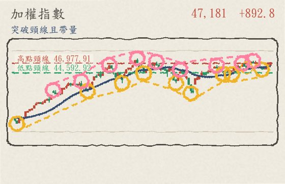
圖說：加權指數日 K（與個股圖相同標記）：黃圈＝轉折低點、粉圈＝轉折高點、虛線小圈＝還沒確認的轉折、藍線＝月線 MA20、水平虛線＝多方／空方頸線。最後一根是資料日當天。
本區塊為公開資料的技術面觀察，不構成投資建議，
不報牌、不預測、不下買賣決策。成交金額為集中市場總成交金額（含 ETF／權證），
與頁首摘要的「上市個股成交金額」口徑不同。標籤是統計，不是評分、也不是推薦。
籌碼趨勢（近 20 個交易日） 資料日 2026-08-24 ~ 2026-09-18
資料源與當日籌碼表完全相同（T86 三大法人全市場合計、MI_MARGN 上市融資），
只是逐日回補：這兩個端點都吃日期參數，所以可以畫趨勢，不是只能拿當日。
上圖：外資／投信／自營商買賣超（正＝買超、負＝賣超，單位張）；下圖：上市融資餘額（張）。
抓不到的交易日直接省略（不用前值替代），本圖為 20 個交易日。
上市 vs 上櫃（同期快篩）
加權 +1.93% vs 櫃買 +3.64%（同向） → 同向
（兩個市場分開寫，不合併成一個數字；櫃買為 TPEX 公開資料）
櫃買歷史：TPEX 逐日回補 130 根；來源：櫃買中心 www/zh-tw/indexInfo/sectinx（逐日，官方；OpenAPI tpex_index 只回當月）
（TPEX OpenAPI 只回當月，故逐日回補；歷史不足就不算該條均線並標「資料不足」，不用錯數字）
近 20 個交易日大盤狀態回溯（最新在上）（點開看逐日主狀態／量比／量價象限）
用同一支程式回算最近 20 個交易日（主狀態 S1~S8 與量比 20 皆為當日收盤當時的判定，
不是事後調整）；量比 20 未公布的日子寫「—」。
好條件最多的（前 10）
不好條件最多的（前 10）
好條件（8 項）：站上月線、月線向上、底底高、頭頭高、突破頸線、相對大盤強、攻擊量（量增＋上漲）、守住今日高檔（距今日高點 1% 內）。
不好條件（8 項）：跌破前低、今日下跌、相對大盤弱、在月線之下、量增下跌（出貨）、貼近今日低點（1% 內）、跌破昨日低點、月線下彎。
兩邊都是同一組日線資料＋盤中即時價算出來的「符合項目數」，只是把方向相反的條件分開數；
條件數不是評分或推薦，不構成投資建議。
盤中爆量（估量比 ≥ 1.5）（18 上市 11／上櫃 7）
今日疲弱（跌幅前 10）（10 上市 7／上櫃 3）
逐檔（50 檔，依盤中成交金額排序）
聯電 2303 上市
155.5 +8.0（+5.42%）
上升趨勢（底底高＋頭頭高） 盤中成交值 372.87 億・全榜第 1 名（上市第 1 名）・相對大盤 +4.02
好條件 7/8：站上月線、月線向上、底底高、頭頭高、突破頸線、相對大盤強、攻擊量（量增＋上漲）
不好條件 0/8：無
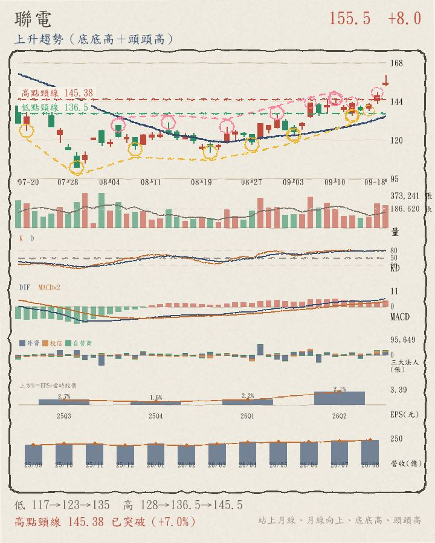
12:30 盤中 155.5（+5.42%），比加權指數強 4.02 個百分點、站上月線 132.725，已突破頸線 145.5，轉折結構仍是底底高＋頭頭高。
- 月線位置：現價 155.5 在月線 132.725 之上（+17.2%）；5 日線 142.2 也在月線之上（短均在上）；月線向上
- 量能：以已過交易時間推估，今天成交量約是 20 日均量的 1.81 倍（爆量），比 20 日均量大不少；上漲又量增，量價配合
- 關鍵價位：頸線 145.5 已站上；前一交易日高點 149.5（高於 4.0%）；今天盤中高點 160.5（低於 3.1%）；今天盤中低點 153.5（高於 1.3%）
- 轉折結構：低點 117、123、135 一路墊高、高點 128、136.5、145.5 也一路墊高，是底底高＋頭頭高；還沒確認的轉折低點 09-14 135、09-16 138；還沒確認的轉折高點 09-14 143.5、09-17 149.5（圖上虛線小圈）
聯發科 2454 上市
4705 +205.0（+4.56%）
高點墊高、底部不穩 盤中成交值 275.67 億・全榜第 2 名（上市第 2 名）・相對大盤 +3.16
好條件 6/8：站上月線、月線向上、頭頭高、突破頸線、相對大盤強、守住今日高檔（距今日高點 1% 內）
不好條件 0/8：無
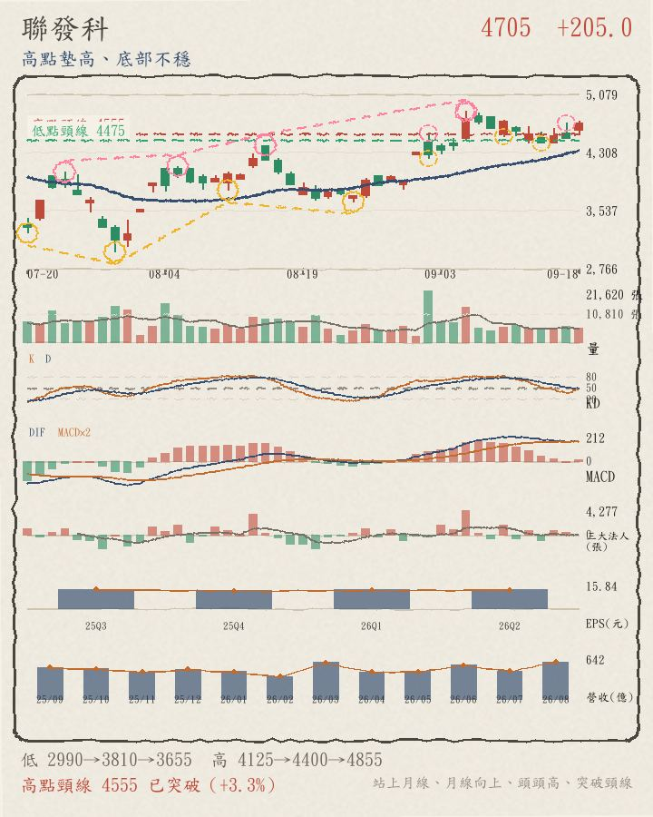
12:30 盤中 4705（+4.56%），比加權指數強 3.16 個百分點、站上月線 4288.75，已突破頸線 4400，高點還在墊高（但底部沒同步墊高）。
- 月線位置：現價 4705 在月線 4288.75 之上（+9.7%）；5 日線 4521 也在月線之上（短均在上）；月線向上
- 量能：以已過交易時間推估，今天成交量約是 20 日均量的 1.04 倍（量平），跟 20 日均量差不多
- 關鍵價位：頸線 4400 已站上；前一交易日高點 4700（高於 0.1%）；今天盤中高點 4720（低於 0.3%）；今天盤中低點 4545（高於 3.5%）
- 轉折結構：高點 4125、4400、4855 墊高（頭頭高），但低點 2990、3810、3655 沒有同步墊高；還沒確認的轉折低點 09-10 4520、09-15 4430；還沒確認的轉折高點 09-07 4855、09-17 4700（圖上虛線小圈）
台積電 2330 上市
2450 +25.0（+1.03%）
底部墊高、未過前高 盤中成交值 262.69 億・全榜第 3 名（上市第 3 名）・相對大盤 -0.37
好條件 5/8：站上月線、月線向上、底底高、突破頸線、守住今日高檔（距今日高點 1% 內）
不好條件 2/8：相對大盤弱、貼近今日低點（1% 內）
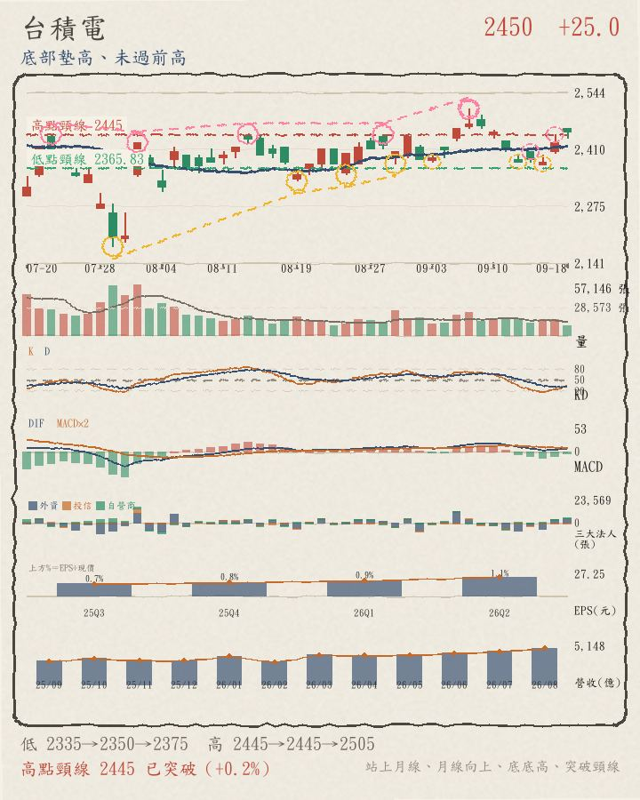
12:30 盤中 2450（+1.03%），比加權指數弱 0.37 個百分點、站上月線 2414.25，已突破頸線 2445，底部還在墊高（但高點沒同步創高）。
- 月線位置：現價 2450 在月線 2414.25 之上（+1.5%）；5 日線 2396 也在月線之下（短均在下）；月線向上
- 量能：以已過交易時間推估，今天成交量約是 20 日均量的 0.81 倍（量平），比 20 日均量少很多；上漲但量縮，量價背離
- 關鍵價位：頸線 2445 已站上；前一交易日高點 2445（高於 0.2%）；今天盤中高點 2460（低於 0.4%）；今天盤中低點 2435（高於 0.6%）
- 轉折結構：低點 2335、2350、2375 墊高（底底高），但高點 2445、2445、2505 沒有同步創高；還沒確認的轉折低點 09-14 2380、09-16 2375；還沒確認的轉折高點 09-15 2405、09-17 2445（圖上虛線小圈）
南亞科 2408 上市
518 +30.0（+6.15%）
區間或轉弱 盤中成交值 262.2 億・全榜第 4 名（上市第 4 名）・相對大盤 +4.75
好條件 2/8：站上月線、相對大盤強
不好條件 1/8：月線下彎
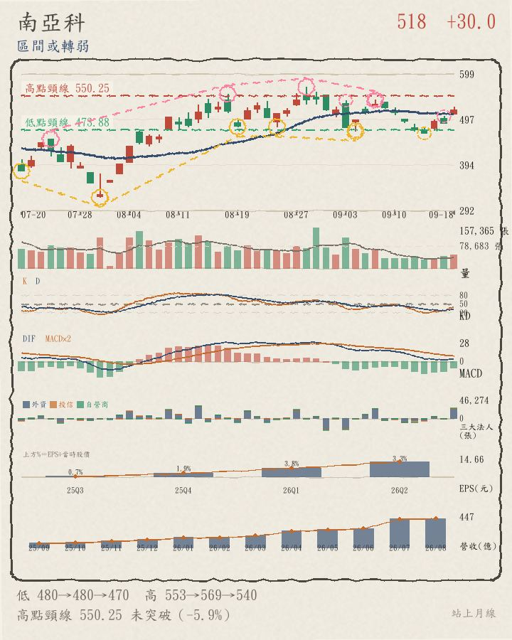
12:30 盤中 518（+6.15%），比加權指數強 4.75 個百分點、站上月線 509.375，離頸線 569 還差 9.0%，轉折還沒走出明顯方向。
- 月線位置：現價 518 在月線 509.375 之上（+1.7%）；5 日線 482.4 也在月線之下（短均在下）；月線向下
- 量能：以已過交易時間推估，今天成交量約是 20 日均量的 0.97 倍（量平），跟 20 日均量差不多
- 關鍵價位：頸線 569 還沒突破，差 9.0%；前一交易日高點 504（高於 2.8%）；今天盤中高點 525（低於 1.3%）；今天盤中低點 508（高於 2.0%）
- 轉折結構：低點 480、480、470 與高點 553、569、540 都沒有明顯遞增，屬於區間震盪或轉弱；還沒確認的轉折低點 09-04 470、09-15 465.5；還沒確認的轉折高點 09-08 540、09-17 504（圖上虛線小圈）
創意 3443 上市
7150 +650.0（+10.00%）
上升趨勢（底底高＋頭頭高） 盤中成交值 172.96 億・全榜第 5 名（上市第 5 名）・相對大盤 +8.60
好條件 7/8：站上月線、月線向上、底底高、頭頭高、突破頸線、相對大盤強、攻擊量（量增＋上漲）
不好條件 0/8：無
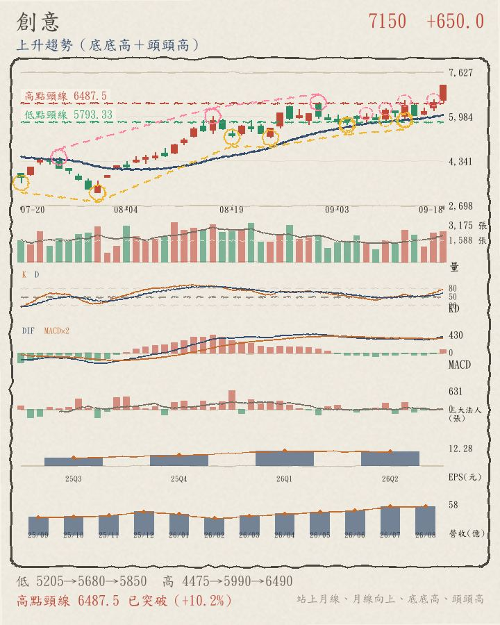
12:30 盤中 7150（+10.00%），比加權指數強 8.60 個百分點、站上月線 5973.25，已突破頸線 6490，轉折結構仍是底底高＋頭頭高。
- 月線位置：現價 7150 在月線 5973.25 之上（+19.7%）；5 日線 6245 也在月線之上（短均在上）；月線向上
- 量能：以已過交易時間推估，今天成交量約是 20 日均量的 1.66 倍（爆量），比 20 日均量大不少；上漲又量增，量價配合
- 關鍵價位：頸線 6490 已站上；前一交易日高點 6610（高於 8.2%）；今天盤中高點 7150（高於 0.0%）；今天盤中低點 6510（高於 9.8%）
- 轉折結構：低點 5205、5680、5850 一路墊高、高點 4475、5990、6490 也一路墊高，是底底高＋頭頭高；還沒確認的轉折低點 09-10 5850、09-14 5850；還沒確認的轉折高點 09-14 6575、09-17 6610（圖上虛線小圈）
穩懋 3105 上櫃
494 +23.0（+4.88%）
區間或轉弱 盤中成交值 171.21 億・全榜第 6 名（上櫃第 1 名）・相對大盤 +3.48
好條件 5/8：站上月線、月線向上、突破頸線、相對大盤強、攻擊量（量增＋上漲）
不好條件 0/8：無
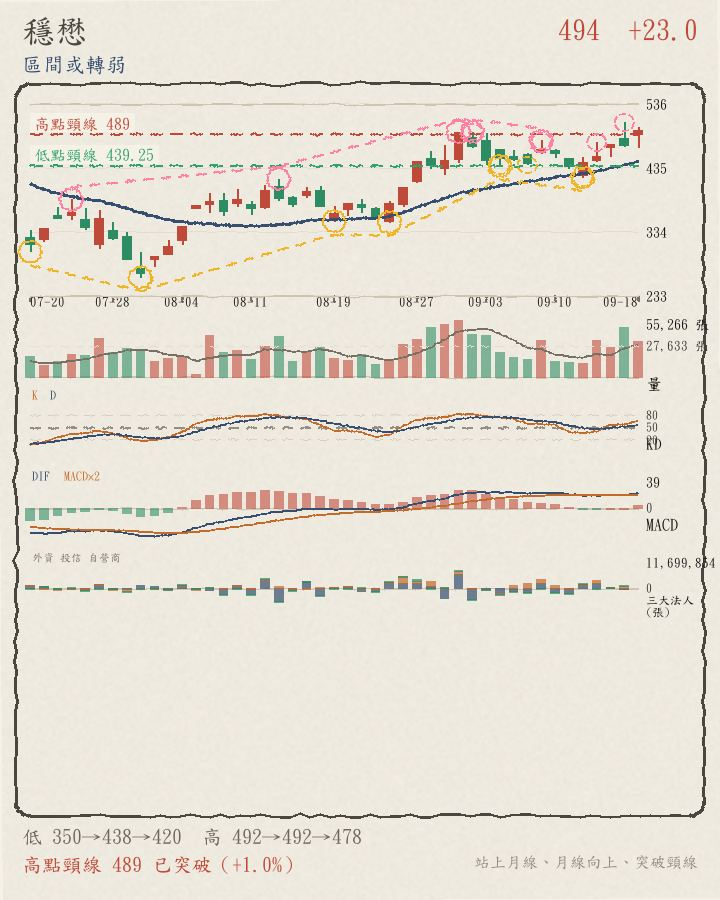
12:30 盤中 494（+4.88%），比加權指數強 3.48 個百分點、站上月線 439.9，已突破頸線 478，轉折還沒走出明顯方向。
- 月線位置：現價 494 在月線 439.9 之上（+12.3%）；5 日線 455.8 也在月線之上（短均在上）；月線向上
- 量能：以已過交易時間推估，今天成交量約是 20 日均量的 1.55 倍（爆量），比 20 日均量大不少；上漲又量增，量價配合
- 關鍵價位：頸線 478 已站上；前一交易日高點 507（低於 2.6%）；今天盤中高點 499.5（低於 1.1%）；今天盤中低點 467（高於 5.8%）
- 轉折結構：低點 349.5、438.5、420 與高點 492、492、478 都沒有明顯遞增，屬於區間震盪或轉弱；還沒確認的轉折低點 09-08 440、09-14 420；還沒確認的轉折高點 09-15 476、09-17 507（圖上虛線小圈）
京元電子 2449 上市
291.5 +26.5（+10.00%）
區間或轉弱 盤中成交值 150.73 億・全榜第 7 名（上市第 6 名）・相對大盤 +8.60
好條件 5/8：站上月線、月線向上、突破頸線、相對大盤強、攻擊量（量增＋上漲）
不好條件 0/8：無
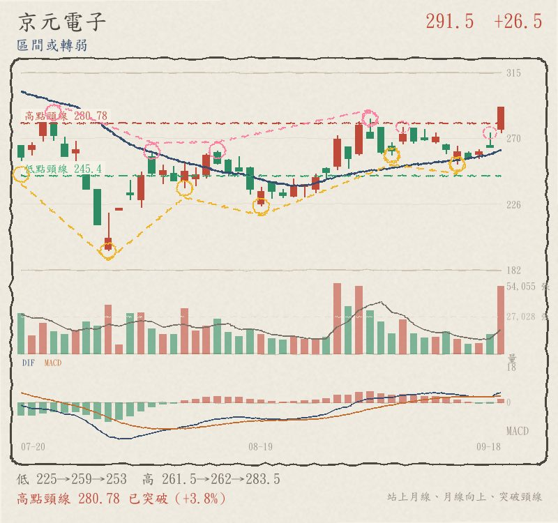
12:30 盤中 291.5（+10.00%），比加權指數強 8.60 個百分點、站上月線 259.625，已突破頸線 283.5，轉折還沒走出明顯方向。
- 月線位置：現價 291.5 在月線 259.625 之上（+12.3%）；5 日線 261.6 也在月線之上（短均在上）；月線向上
- 量能：以已過交易時間推估，今天成交量約是 20 日均量的 3.37 倍（爆量），比 20 日均量大不少；上漲又量增，量價配合
- 關鍵價位：頸線 283.5 已站上；前一交易日高點 274（高於 6.4%）；今天盤中高點 291.5（高於 0.0%）；今天盤中低點 274（高於 6.4%）
- 轉折結構：低點 225、259、253 與高點 261.5、262、283.5 都沒有明顯遞增，屬於區間震盪或轉弱；還沒確認的轉折低點 09-04 259、09-14 253；還沒確認的轉折高點 09-07 278、09-17 274（圖上虛線小圈）
頎邦 6147 上櫃
223.5 +14.0（+6.68%）
區間或轉弱 盤中成交值 131.89 億・全榜第 8 名（上櫃第 2 名）・相對大盤 +5.28
好條件 5/8：站上月線、月線向上、突破頸線、相對大盤強、攻擊量（量增＋上漲）
不好條件 0/8：無
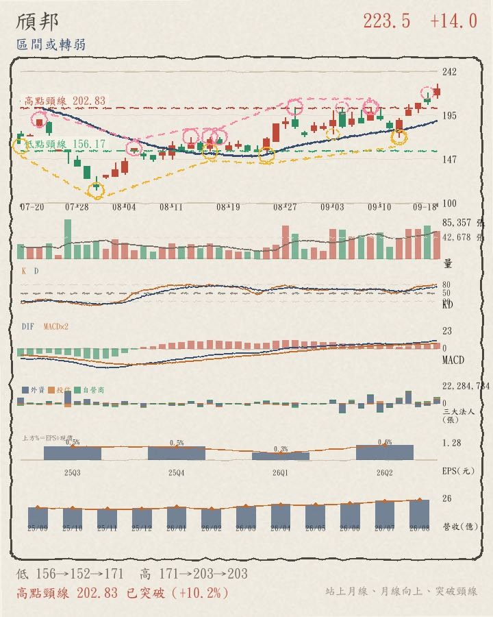
12:30 盤中 223.5（+6.68%），比加權指數強 5.28 個百分點、站上月線 185.2，已突破頸線 203，轉折還沒走出明顯方向。
- 月線位置：現價 223.5 在月線 185.2 之上（+20.7%）；5 日線 197.4 也在月線之上（短均在上）；月線向上
- 量能：以已過交易時間推估，今天成交量約是 20 日均量的 1.89 倍（爆量），比 20 日均量大不少；上漲又量增，量價配合
- 關鍵價位：頸線 203 已站上；前一交易日高點 219（高於 2.1%）；今天盤中高點 228.5（低於 2.2%）；今天盤中低點 213（高於 4.9%）
- 轉折結構：低點 155.5、152、171 與高點 171、203、203 都沒有明顯遞增，屬於區間震盪或轉弱；還沒確認的轉折低點 09-03 174、09-14 171；還沒確認的轉折高點 09-09 203、09-17 219（圖上虛線小圈）
華邦電 2344 上市
174.5 +4.5（+2.65%）
區間或轉弱 盤中成交值 127.14 億・全榜第 9 名（上市第 7 名）・相對大盤 +1.25
好條件 1/8：相對大盤強
不好條件 3/8：在月線之下、貼近今日低點（1% 內）、月線下彎
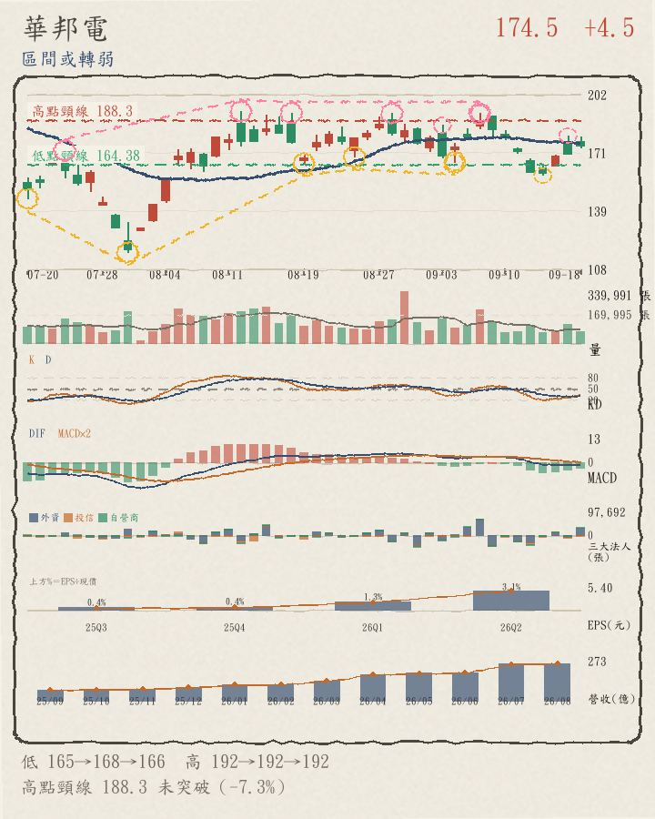
12:30 盤中 174.5（+2.65%），比加權指數強 1.25 個百分點、跌破月線 176.35，離頸線 192 還差 9.1%，轉折還沒走出明顯方向。
- 月線位置：現價 174.5 在月線 176.35 之下（-1.1%）；5 日線 166 也在月線之下（短均在下）；月線向下
- 量能：以已過交易時間推估，今天成交量約是 20 日均量的 0.74 倍（量平），比 20 日均量少很多；上漲但量縮，量價背離
- 關鍵價位：頸線 192 還沒突破，差 9.1%；前一交易日高點 180（低於 3.1%）；今天盤中高點 179.5（低於 2.8%）；今天盤中低點 173.5（高於 0.6%）
- 轉折結構：低點 165、168.5、165.5 與高點 192、192、192 都沒有明顯遞增，屬於區間震盪或轉弱；還沒確認的轉折低點 09-04 165.5、09-15 158.5；還沒確認的轉折高點 09-08 192、09-17 180（圖上虛線小圈）
量平
↑ 回上方清單
南亞 1303 上市
236 +0.0（+0.00%）
底部墊高、未過前高 盤中成交值 123.24 億・全榜第 10 名（上市第 8 名）・相對大盤 -1.40
好條件 3/8：站上月線、月線向上、底底高
不好條件 2/8：相對大盤弱、貼近今日低點（1% 內）
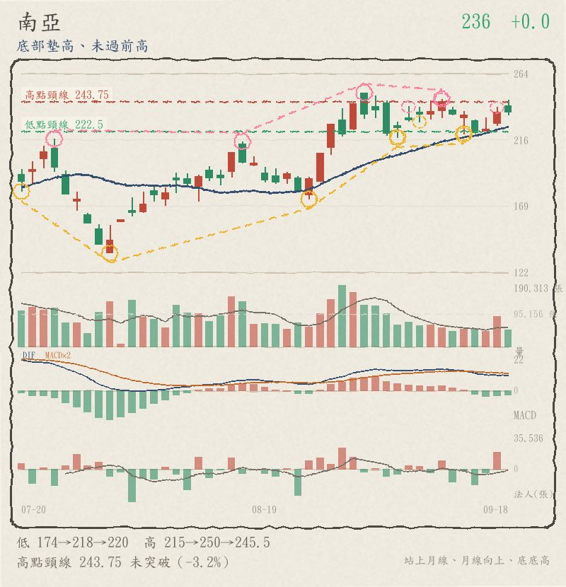
12:30 盤中 236（+0.00%），比加權指數弱 1.40 個百分點、站上月線 223.625，離頸線 245.5 還差 3.9%，底部還在墊高（但高點沒同步創高）。
- 月線位置：現價 236 在月線 223.625 之上（+5.5%）；5 日線 230 也在月線之上（短均在上）；月線向上
- 量能：以已過交易時間推估，今天成交量約是 20 日均量的 0.76 倍（量平），比 20 日均量少很多
- 關鍵價位：頸線 245.5 還沒突破，差 3.9%；前一交易日高點 239.5（低於 1.5%）；今天盤中高點 245（低於 3.7%）；今天盤中低點 234（高於 0.9%）
- 轉折結構：低點 174、218、220.5 墊高（底底高），但高點 215、250、245.5 沒有同步創高；還沒確認的轉折低點 09-08 229、09-14 220.5；還沒確認的轉折高點 09-10 245.5、09-17 239.5（圖上虛線小圈）
環球晶 6488 上櫃
948 +36.0（+3.95%）
區間或轉弱 盤中成交值 122.6 億・全榜第 11 名（上櫃第 3 名）・相對大盤 +2.55
好條件 3/8：站上月線、相對大盤強、攻擊量（量增＋上漲）
不好條件 1/8：月線下彎
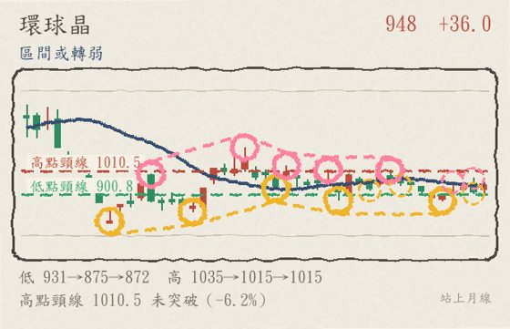
12:30 盤中 948（+3.95%），比加權指數強 2.55 個百分點、站上月線 947.7，離頸線 1015 還差 6.6%，轉折還沒走出明顯方向。
- 月線位置：現價 948 在月線 947.7 之上（+0.0%）；5 日線 913 也在月線之下（短均在下）；月線向下
- 量能：以已過交易時間推估，今天成交量約是 20 日均量的 2.05 倍（爆量），比 20 日均量大不少；上漲又量增，量價配合
- 關鍵價位：頸線 1015 還沒突破，差 6.6%；前一交易日高點 977（低於 3.0%）；今天盤中高點 960（低於 1.2%）；今天盤中低點 901（高於 5.2%）
- 轉折結構：低點 931、875、872 與高點 1035、1015、1015 都沒有明顯遞增，屬於區間震盪或轉弱；還沒確認的轉折低點 09-14 872、09-17 906；還沒確認的轉折高點 09-15 959、09-17 977（圖上虛線小圈）
大立光 3008 上市
6405 +385.0（+6.40%）
上升趨勢（底底高＋頭頭高） 盤中成交值 121.69 億・全榜第 12 名（上市第 9 名）・相對大盤 +5.00
好條件 4/8：月線向上、底底高、頭頭高、相對大盤強
不好條件 1/8：在月線之下
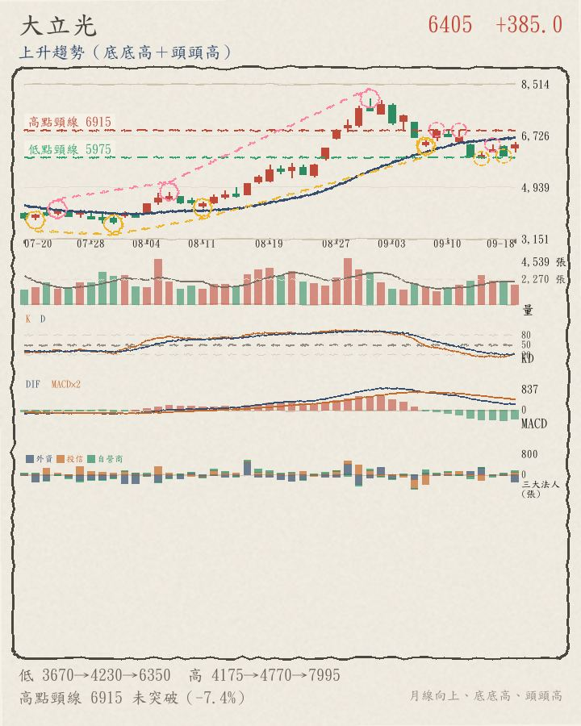
12:30 盤中 6405（+6.40%），比加權指數強 5.00 個百分點、跌破月線 6614，離頸線 7995 還差 19.9%，轉折結構仍是底底高＋頭頭高。
- 月線位置：現價 6405 在月線 6614 之下（-3.2%）；5 日線 6191 也在月線之下（短均在下）；月線向上
- 量能：以已過交易時間推估，今天成交量約是 20 日均量的 1.05 倍（量平），比 20 日均量大一些
- 關鍵價位：頸線 7995 還沒突破，差 19.9%；前一交易日高點 6370（高於 0.5%）；今天盤中高點 6500（低於 1.5%）；今天盤中低點 6150（高於 4.1%）
- 轉折結構：低點 3670、4230、6350 一路墊高、高點 4175、4770、7995 也一路墊高，是底底高＋頭頭高；還沒確認的轉折低點 09-15 5930、09-17 6020；還沒確認的轉折高點 09-11 6900、09-16 6415（圖上虛線小圈）
貿聯-KY 3665 上市
2190 +180.0（+8.96%）
區間或轉弱 盤中成交值 110.75 億・全榜第 13 名（上市第 10 名）・相對大盤 +7.56
好條件 4/8：站上月線、相對大盤強、攻擊量（量增＋上漲）、守住今日高檔（距今日高點 1% 內）
不好條件 1/8：月線下彎
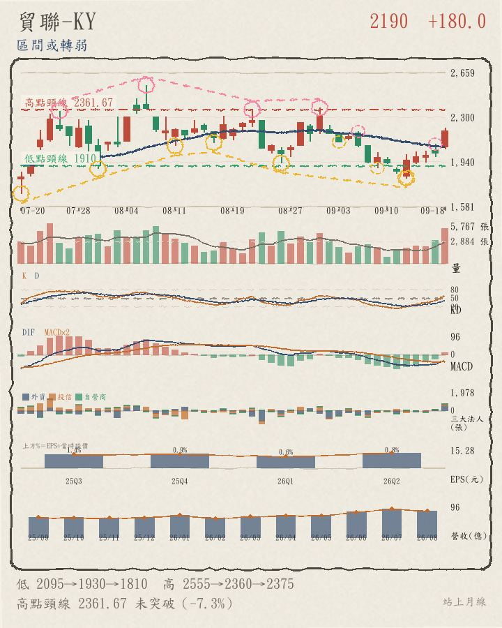
12:30 盤中 2190（+8.96%），比加權指數強 7.56 個百分點、站上月線 2067.25，離頸線 2375 還差 7.8%，轉折還沒走出明顯方向。
- 月線位置：現價 2190 在月線 2067.25 之上（+5.9%）；5 日線 1963 也在月線之下（短均在下）；月線向下
- 量能：以已過交易時間推估，今天成交量約是 20 日均量的 2.40 倍（爆量），比 20 日均量大不少；上漲又量增，量價配合
- 關鍵價位：頸線 2375 還沒突破，差 7.8%；前一交易日高點 2085（高於 5.0%）；今天盤中高點 2210（低於 0.9%）；今天盤中低點 2045（高於 7.1%）
- 轉折結構：低點 2095、1930、1810 與高點 2555、2360、2375 都沒有明顯遞增，屬於區間震盪或轉弱；還沒確認的轉折低點 09-09 1890、09-14 1810；還沒確認的轉折高點 09-07 2185、09-17 2085（圖上虛線小圈）
台光電 2383 上市
4820 +125.0（+2.66%）
區間或轉弱 盤中成交值 105.46 億・全榜第 14 名（上市第 11 名）・相對大盤 +1.26
好條件 2/8：相對大盤強、攻擊量（量增＋上漲）
不好條件 4/8：跌破前低、在月線之下、貼近今日低點（1% 內）、月線下彎
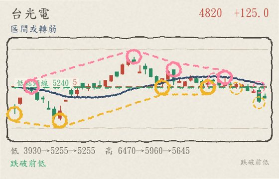
12:30 盤中 4820（+2.66%），比加權指數強 1.26 個百分點、跌破月線 5402.75，離頸線 5960 還差 19.1%，轉折還沒走出明顯方向。
- 月線位置：現價 4820 在月線 5402.75 之下（-10.8%）；5 日線 5121 也在月線之下（短均在下）；月線向下
- 量能：以已過交易時間推估，今天成交量約是 20 日均量的 1.69 倍（爆量），比 20 日均量大不少；上漲又量增，量價配合
- 關鍵價位：已跌破前一個轉折低點；頸線 5960 還在現價上方 19.1%；前一交易日高點 5255（低於 8.3%）；今天盤中高點 5000（低於 3.6%）；今天盤中低點 4815（高於 0.1%）
- 轉折結構：低點 3930、5255、5255 與高點 6470、5960、5645 都沒有明顯遞增，屬於區間震盪或轉弱；還沒確認的轉折低點 09-11 5210、09-17 4635；還沒確認的轉折高點 09-09 5645、09-17 5255（圖上虛線小圈）
富喬 1815 上櫃
119.5 +7.5（+6.70%）
區間或轉弱 盤中成交值 105.04 億・全榜第 15 名（上櫃第 4 名）・相對大盤 +5.30
好條件 5/8：站上月線、月線向上、突破頸線、相對大盤強、攻擊量（量增＋上漲）
不好條件 0/8：無
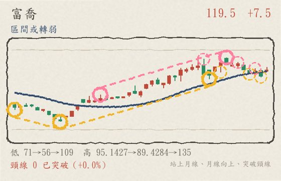
12:30 盤中 119.5（+6.70%），比加權指數強 5.30 個百分點、站上月線 117.392，已突破頸線 89.4284，轉折還沒走出明顯方向。
- 月線位置：現價 119.5 在月線 117.392 之上（+1.8%）；5 日線 118.5 也在月線之上（短均在上）；月線向上
- 量能：以已過交易時間推估，今天成交量約是 20 日均量的 1.36 倍（量增），比 20 日均量大不少；上漲又量增，量價配合
- 關鍵價位：頸線 89.4284 已站上；前一交易日高點 119.5（高於 0.0%）；今天盤中高點 123（低於 2.8%）；今天盤中低點 117.5（高於 1.7%）
- 轉折結構：低點 70.857、56.2856、108.571 與高點 95.1427、89.4284、135 都沒有明顯遞增，屬於區間震盪或轉弱；還沒確認的轉折低點 09-15 114.5、09-17 111；還沒確認的轉折高點 09-11 129、09-16 121.5（圖上虛線小圈）
台達電 2308 上市
1720 +35.0（+2.08%）
區間或轉弱 盤中成交值 103.1 億・全榜第 16 名（上市第 12 名）・相對大盤 +0.68
好條件 1/8：相對大盤強
不好條件 3/8：在月線之下、貼近今日低點（1% 內）、月線下彎
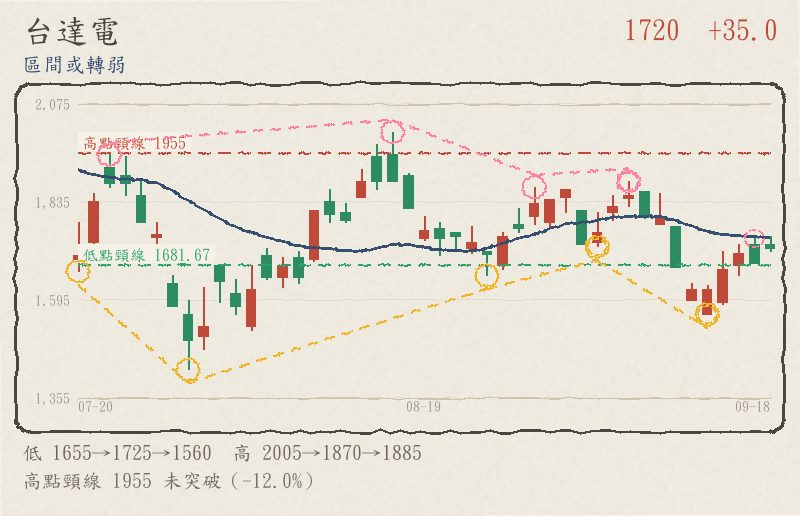
12:30 盤中 1720（+2.08%），比加權指數強 0.68 個百分點、跌破月線 1749.75，離頸線 1885 還差 8.8%，轉折還沒走出明顯方向。
- 月線位置：現價 1720 在月線 1749.75 之下（-1.7%）；5 日線 1661 也在月線之下（短均在下）；月線向下
- 量能：以已過交易時間推估，今天成交量約是 20 日均量的 0.82 倍（量平），比 20 日均量少很多；上漲但量縮，量價背離
- 關鍵價位：頸線 1885 還沒突破，差 8.8%；前一交易日高點 1745（低於 1.4%）；今天盤中高點 1750（低於 1.7%）；今天盤中低點 1715（高於 0.3%）
- 轉折結構：低點 1655、1725、1560 與高點 2005、1870、1885 都沒有明顯遞增，屬於區間震盪或轉弱；還沒確認的轉折低點 09-03 1725、09-14 1560；還沒確認的轉折高點 09-07 1885、09-17 1745（圖上虛線小圈）
量平
↑ 回上方清單
雙鴻 3324 上櫃
1465 +80.0（+5.78%）
區間或轉弱 盤中成交值 102.27 億・全榜第 17 名（上櫃第 5 名）・相對大盤 +4.38
好條件 4/8：站上月線、月線向上、相對大盤強、攻擊量（量增＋上漲）
不好條件 0/8：無
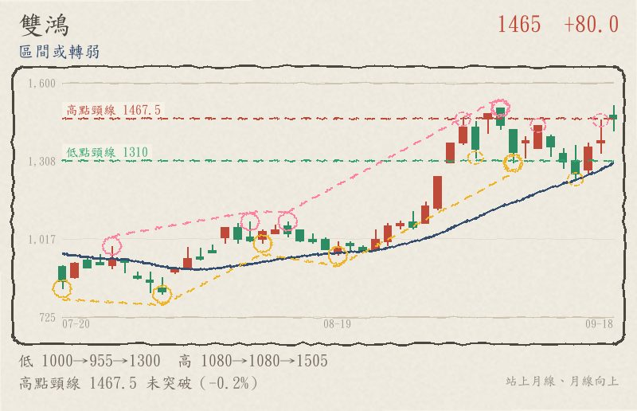
12:30 盤中 1465（+5.78%），比加權指數強 4.38 個百分點、站上月線 1274.7，離頸線 1505 還差 2.7%，轉折還沒走出明顯方向。
- 月線位置：現價 1465 在月線 1274.7 之上（+14.9%）；5 日線 1334 也在月線之上（短均在上）；月線向上
- 量能：以已過交易時間推估，今天成交量約是 20 日均量的 2.49 倍（爆量），比 20 日均量大不少；上漲又量增，量價配合
- 關鍵價位：頸線 1505 還沒突破，差 2.7%；前一交易日高點 1460（高於 0.3%）；今天盤中高點 1515（低於 3.3%）；今天盤中低點 1420（高於 3.2%）
- 轉折結構：低點 1000、955、1300 與高點 1080、1080、1505 都沒有明顯遞增，屬於區間震盪或轉弱；還沒確認的轉折低點 09-08 1300、09-15 1240；還沒確認的轉折高點 09-10 1440、09-17 1460（圖上虛線小圈）
全新 2455 上市
554 +20.0（+3.75%）
區間或轉弱 盤中成交值 95.33 億・全榜第 18 名（上市第 13 名）・相對大盤 +2.35
好條件 5/8：站上月線、月線向上、突破頸線、相對大盤強、攻擊量（量增＋上漲）
不好條件 0/8：無
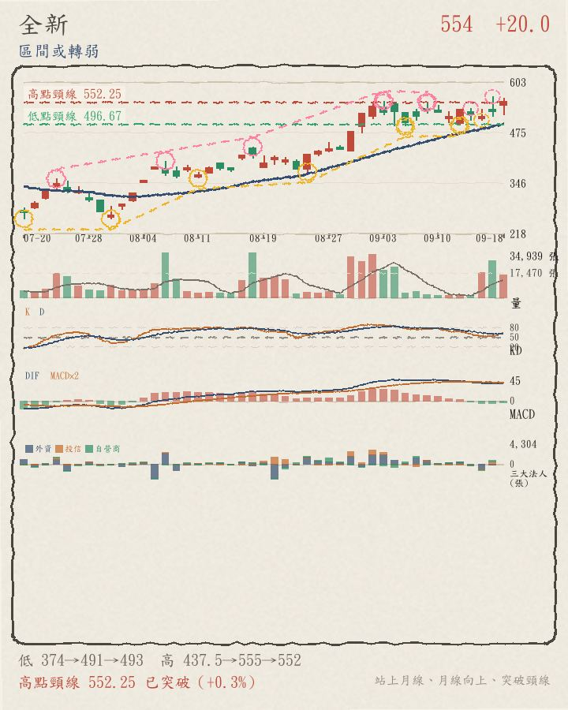
12:30 盤中 554（+3.75%），比加權指數強 2.35 個百分點、站上月線 489.85，已突破頸線 552，轉折還沒走出明顯方向。
- 月線位置：現價 554 在月線 489.85 之上（+13.1%）；5 日線 523.8 也在月線之上（短均在上）；月線向上
- 量能：以已過交易時間推估，今天成交量約是 20 日均量的 2.00 倍（爆量），比 20 日均量大不少；上漲又量增，量價配合
- 關鍵價位：頸線 552 已站上；前一交易日高點 566（低於 2.1%）；今天盤中高點 563（低於 1.6%）；今天盤中低點 520（高於 6.5%）
- 轉折結構：低點 374.5、491、493 與高點 437.5、555、552 都沒有明顯遞增，屬於區間震盪或轉弱；還沒確認的轉折低點 09-14 493、09-16 506；還沒確認的轉折高點 09-15 536、09-17 566（圖上虛線小圈）
國巨* 2327 上市
545 +16.0（+3.02%）
區間或轉弱 盤中成交值 94.09 億・全榜第 19 名（上市第 14 名）・相對大盤 +1.62
好條件 2/8：相對大盤強、守住今日高檔（距今日高點 1% 內）
不好條件 2/8：在月線之下、月線下彎
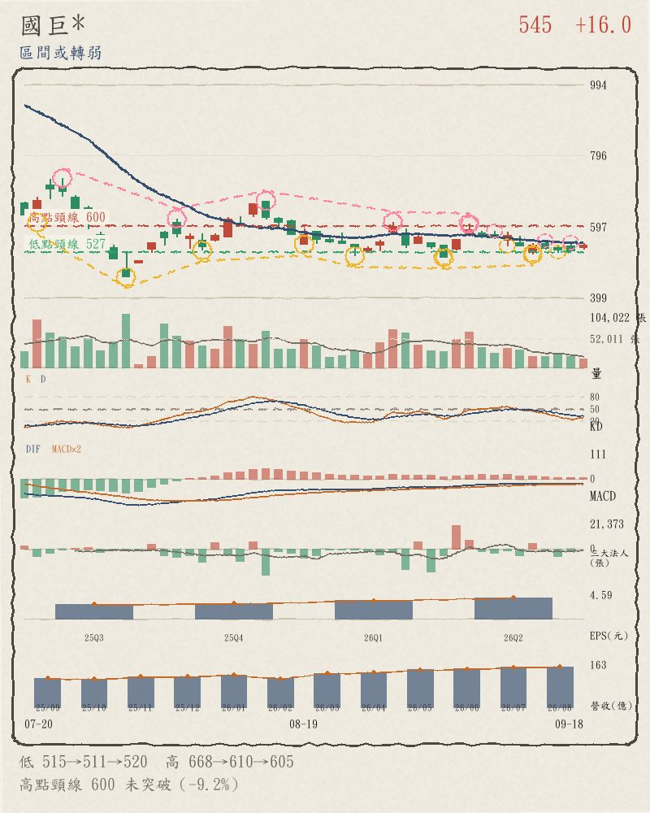
12:30 盤中 545（+3.02%），比加權指數強 1.62 個百分點、跌破月線 552.4，離頸線 605 還差 9.9%，轉折還沒走出明顯方向。
- 月線位置：現價 545 在月線 552.4 之下（-1.3%）；5 日線 538.2 也在月線之下（短均在下）；月線向下
- 量能：以已過交易時間推估，今天成交量約是 20 日均量的 0.58 倍（量縮），比 20 日均量少很多；上漲但量縮，量價背離
- 關鍵價位：頸線 605 還沒突破，差 9.9%；前一交易日高點 553（低於 1.4%）；今天盤中高點 549（低於 0.7%）；今天盤中低點 533（高於 2.3%）
- 轉折結構：低點 515、511、520 與高點 668、610、605 都沒有明顯遞增，屬於區間震盪或轉弱；還沒確認的轉折低點 09-14 520、09-16 526；還沒確認的轉折高點 09-15 558、09-17 553（圖上虛線小圈）
量縮
↑ 回上方清單
日月光投控 3711 上市
640 +26.0（+4.23%）
區間或轉弱 盤中成交值 88.92 億・全榜第 20 名（上市第 15 名）・相對大盤 +2.83
好條件 5/8：站上月線、月線向上、相對大盤強、攻擊量（量增＋上漲）、守住今日高檔（距今日高點 1% 內）
不好條件 0/8：無
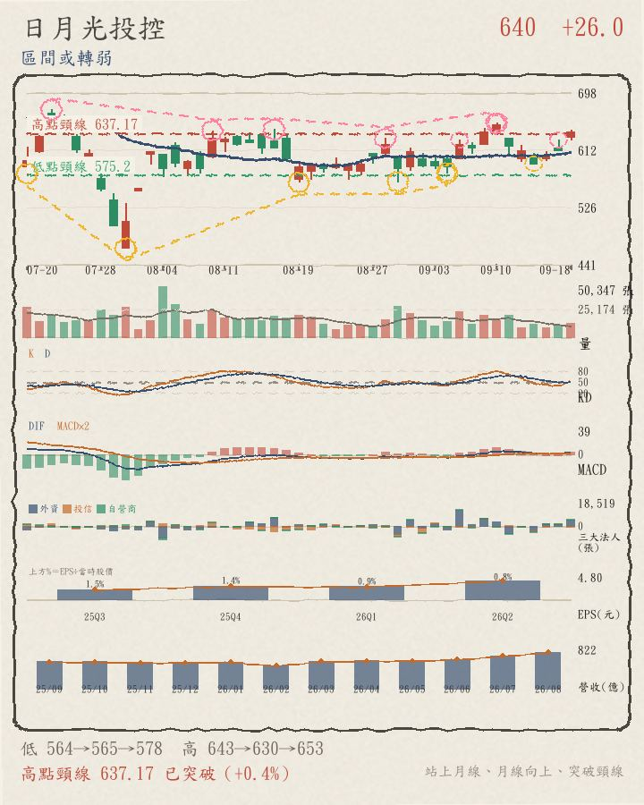
12:30 盤中 640（+4.23%），比加權指數強 2.83 個百分點、站上月線 605.9，離頸線 653 還差 2.0%，轉折還沒走出明顯方向。
- 月線位置：現價 640 在月線 605.9 之上（+5.6%）；5 日線 608.2 也在月線之上（短均在上）；月線向上
- 量能：以已過交易時間推估，今天成交量約是 20 日均量的 1.12 倍（量增），比 20 日均量大一些；上漲又量增，量價配合
- 關鍵價位：頸線 653 還沒突破，差 2.0%；前一交易日高點 628（高於 1.9%）；今天盤中高點 642（低於 0.3%）；今天盤中低點 627（高於 2.1%）
- 轉折結構：低點 564、565、578 與高點 643、630、653 都沒有明顯遞增，屬於區間震盪或轉弱；還沒確認的轉折低點 09-04 578、09-15 592；還沒確認的轉折高點 09-10 653、09-17 628（圖上虛線小圈）
聯茂 6213 上市
503 +8.0（+1.62%）
區間或轉弱 盤中成交值 87.89 億・全榜第 21 名（上市第 16 名）・相對大盤 +0.22
好條件 3/8：月線向上、相對大盤強、攻擊量（量增＋上漲）
不好條件 2/8：在月線之下、貼近今日低點（1% 內）
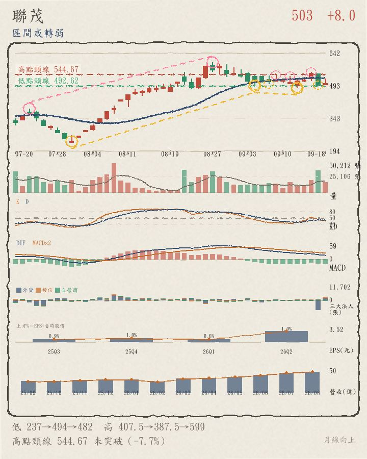
12:30 盤中 503（+1.62%），比加權指數強 0.22 個百分點、跌破月線 528.475，離頸線 599 還差 16.0%，轉折還沒走出明顯方向。
- 月線位置：現價 503 在月線 528.475 之下（-4.8%）；5 日線 517.6 也在月線之下（短均在下）；月線向上
- 量能：以已過交易時間推估，今天成交量約是 20 日均量的 1.28 倍（量增），比 20 日均量大不少；上漲又量增，量價配合
- 關鍵價位：頸線 599 還沒突破，差 16.0%；前一交易日高點 548（低於 8.2%）；今天盤中高點 525（低於 4.2%）；今天盤中低點 501（高於 0.4%）
- 轉折結構：低點 237、493.5、482 與高點 407.5、387.5、599 都沒有明顯遞增，屬於區間震盪或轉弱；還沒確認的轉折低點 09-14 482、09-17 495；還沒確認的轉折高點 09-11 537、09-16 555（圖上虛線小圈）
景碩 3189 上市
825 +20.0（+2.48%）
區間或轉弱 盤中成交值 87.42 億・全榜第 22 名（上市第 17 名）・相對大盤 +1.08
好條件 1/8：相對大盤強
不好條件 2/8：在月線之下、月線下彎
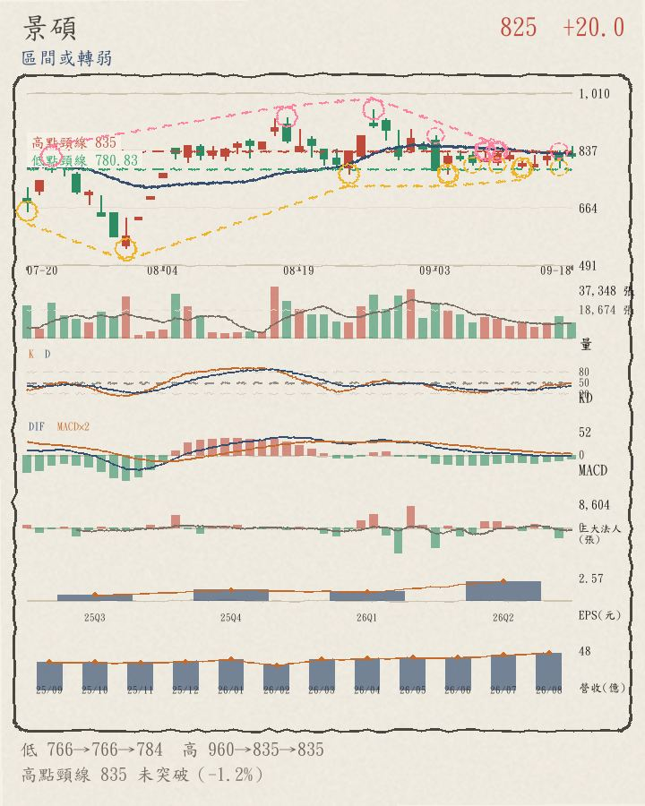
12:30 盤中 825（+2.48%），比加權指數強 1.08 個百分點、跌破月線 828，離頸線 835 還差 1.2%，轉折還沒走出明顯方向。
- 月線位置：現價 825 在月線 828 之下（-0.4%）；5 日線 808 也在月線之下（短均在下）；月線向下
- 量能：以已過交易時間推估，今天成交量約是 20 日均量的 0.78 倍（量平），比 20 日均量少很多；上漲但量縮，量價背離
- 關鍵價位：頸線 835 還沒突破，差 1.2%；前一交易日高點 835（低於 1.2%）；今天盤中高點 850（低於 2.9%）；今天盤中低點 815（高於 1.2%）
- 轉折結構：低點 766、766、784 與高點 960、835、835 都沒有明顯遞增，屬於區間震盪或轉弱；還沒確認的轉折低點 09-14 784、09-17 785；還沒確認的轉折高點 09-10 835、09-17 835（圖上虛線小圈）
量平
↑ 回上方清單
群聯 8299 上櫃
2095 +125.0（+6.35%）
底部墊高、未過前高 盤中成交值 85.79 億・全榜第 23 名（上櫃第 6 名）・相對大盤 +4.95
好條件 5/8：站上月線、底底高、相對大盤強、攻擊量（量增＋上漲）、守住今日高檔（距今日高點 1% 內）
不好條件 1/8：月線下彎
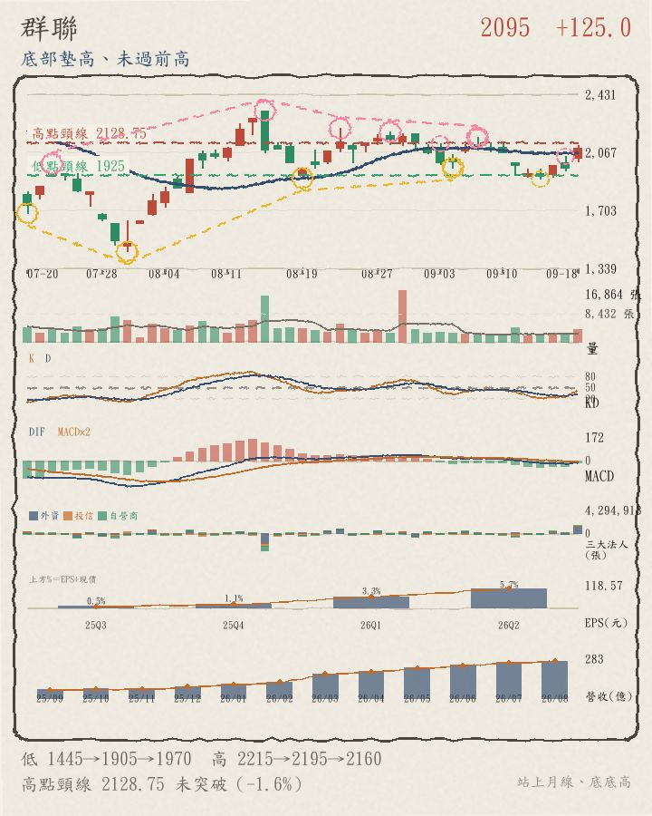
12:30 盤中 2095（+6.35%），比加權指數強 4.95 個百分點、站上月線 2061.25，離頸線 2215 還差 5.4%，底部還在墊高（但高點沒同步創高）。
- 月線位置：現價 2095 在月線 2061.25 之上（+1.6%）；5 日線 1960 也在月線之下（短均在下）；月線向下
- 量能：以已過交易時間推估，今天成交量約是 20 日均量的 1.38 倍（量增），比 20 日均量大不少；上漲又量增，量價配合
- 關鍵價位：頸線 2215 還沒突破，差 5.4%；前一交易日高點 2040（高於 2.7%）；今天盤中高點 2110（低於 0.7%）；今天盤中低點 2010（高於 4.2%）
- 轉折結構：低點 1445、1905、1970 墊高（底底高），但高點 2215、2195、2160 沒有同步創高；還沒確認的轉折低點 09-04 1970、09-15 1900；還沒確認的轉折高點 09-08 2160、09-17 2040（圖上虛線小圈）
矽格 6257 上市
244.5 +22.0（+9.89%）
區間或轉弱 盤中成交值 84.19 億・全榜第 24 名（上市第 18 名）・相對大盤 +8.49
好條件 5/8：站上月線、月線向上、突破頸線、相對大盤強、攻擊量（量增＋上漲）
不好條件 0/8：無
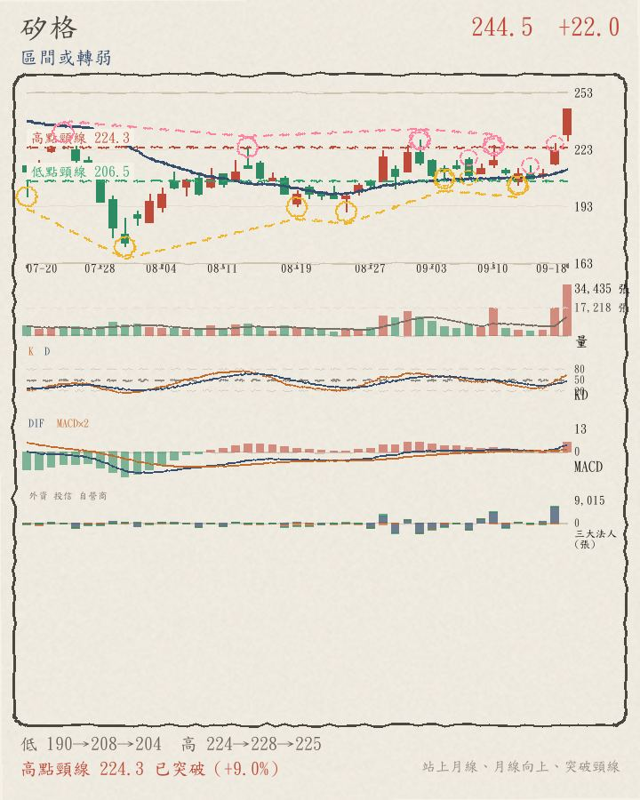
12:30 盤中 244.5（+9.89%），比加權指數強 8.49 個百分點、站上月線 210.1，已突破頸線 225，轉折還沒走出明顯方向。
- 月線位置：現價 244.5 在月線 210.1 之上（+16.4%）；5 日線 212.3 也在月線之上（短均在上）；月線向上
- 量能：以已過交易時間推估，今天成交量約是 20 日均量的 6.20 倍（爆量），比 20 日均量大不少；上漲又量增，量價配合
- 關鍵價位：頸線 225 已站上；前一交易日高點 226（高於 8.2%）；今天盤中高點 244.5（高於 0.0%）；今天盤中低點 227.5（高於 7.5%）
- 轉折結構：低點 190、207.5、204 與高點 224、228、225 都沒有明顯遞增，屬於區間震盪或轉弱；還沒確認的轉折低點 09-08 208、09-14 204；還沒確認的轉折高點 09-15 214.5、09-17 226（圖上虛線小圈）
奇鋐 3017 上市
3380 +195.0（+6.12%）
上升趨勢（底底高＋頭頭高） 盤中成交值 84.16 億・全榜第 25 名（上市第 19 名）・相對大盤 +4.72
好條件 5/8：站上月線、月線向上、底底高、頭頭高、相對大盤強
不好條件 0/8：無
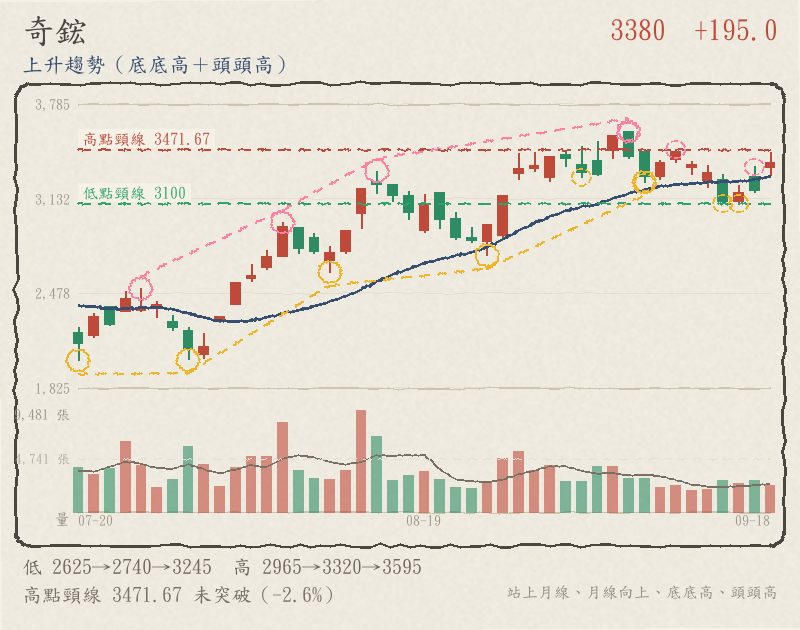
12:30 盤中 3380（+6.12%），比加權指數強 4.72 個百分點、站上月線 3262，離頸線 3595 還差 6.0%，轉折結構仍是底底高＋頭頭高。
- 月線位置：現價 3380 在月線 3262 之上（+3.6%）；5 日線 3231 也在月線之下（短均在下）；月線向上
- 量能：以已過交易時間推估，今天成交量約是 20 日均量的 1.00 倍（量平），跟 20 日均量差不多
- 關鍵價位：頸線 3595 還沒突破，差 6.0%；前一交易日高點 3350（高於 0.9%）；今天盤中高點 3450（低於 2.0%）；今天盤中低點 3290（高於 2.7%）
- 轉折結構：低點 2625、2740、3245 一路墊高、高點 2965、3320、3595 也一路墊高，是底底高＋頭頭高；還沒確認的轉折低點 09-15 3100、09-16 3100；還沒確認的轉折高點 09-10 3470、09-17 3350（圖上虛線小圈）
欣興 3037 上市
981 +41.0（+4.36%）
區間或轉弱 盤中成交值 83.54 億・全榜第 26 名（上市第 20 名）・相對大盤 +2.96
好條件 2/8：相對大盤強、守住今日高檔（距今日高點 1% 內）
不好條件 2/8：在月線之下、月線下彎
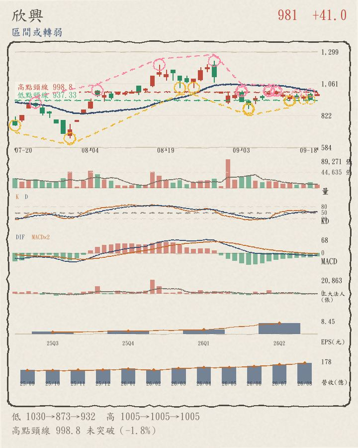
12:30 盤中 981（+4.36%），比加權指數強 2.96 個百分點、跌破月線 1008.1，離頸線 1005 還差 2.4%，轉折還沒走出明顯方向。
- 月線位置：現價 981 在月線 1008.1 之下（-2.7%）；5 日線 959.8 也在月線之下（短均在下）；月線向下
- 量能：以已過交易時間推估，今天成交量約是 20 日均量的 0.49 倍（量縮），比 20 日均量少很多；上漲但量縮，量價背離
- 關鍵價位：頸線 1005 還沒突破，差 2.4%；前一交易日高點 993（低於 1.2%）；今天盤中高點 990（低於 0.9%）；今天盤中低點 971（高於 1.0%）
- 轉折結構：低點 1030、873、932 與高點 1005、1005、1005 都沒有明顯遞增，屬於區間震盪或轉弱；還沒確認的轉折低點 09-16 940、09-17 940；還沒確認的轉折高點 09-15 986、09-17 993（圖上虛線小圈）
量縮
↑ 回上方清單
臻鼎-KY 4958 上市
474.5 -1.5（-0.32%）
上升趨勢（底底高＋頭頭高） 盤中成交值 82.07 億・全榜第 27 名（上市第 21 名）・相對大盤 -1.72
好條件 3/8：月線向上、底底高、頭頭高
不好條件 5/8：今日下跌、相對大盤弱、在月線之下、貼近今日低點（1% 內）、跌破昨日低點
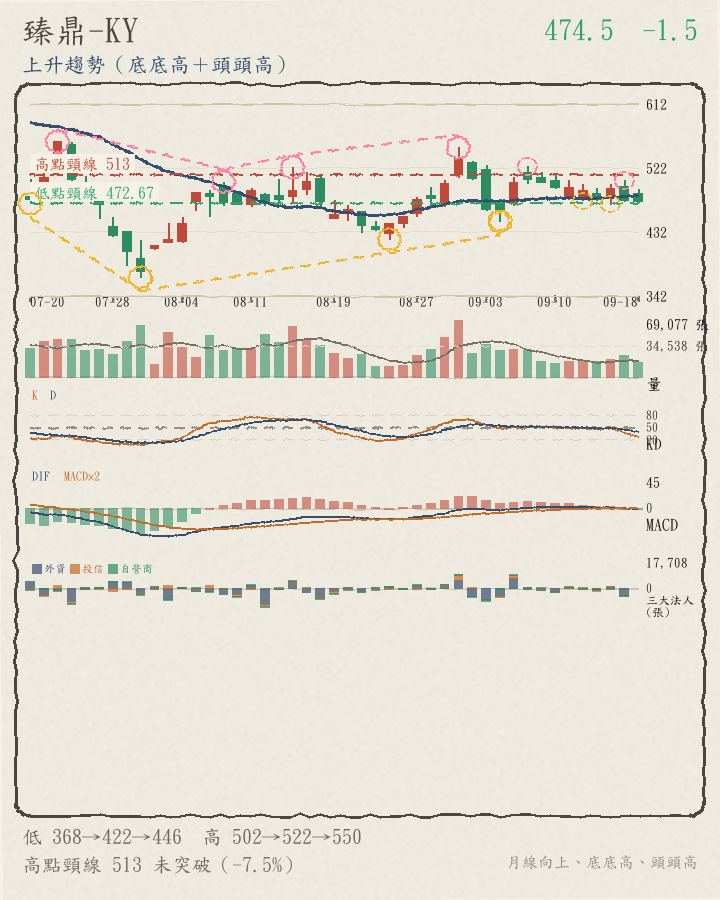
12:30 盤中 474.5（-0.32%），比加權指數弱 1.72 個百分點、跌破月線 481.7，離頸線 550 還差 13.7%，轉折結構仍是底底高＋頭頭高。
- 月線位置：現價 474.5 在月線 481.7 之下（-1.5%）；5 日線 486.3 也在月線之上（短均在上）；月線向上
- 量能：以已過交易時間推估，今天成交量約是 20 日均量的 0.82 倍（量平），比 20 日均量少很多
- 關鍵價位：頸線 550 還沒突破，差 13.7%；前一交易日高點 504（低於 5.9%）；今天盤中高點 491（低於 3.4%）；今天盤中低點 473（高於 0.3%）
- 轉折結構：低點 368、421.5、446.5 一路墊高、高點 502、522、550 也一路墊高，是底底高＋頭頭高；還沒確認的轉折低點 09-14 475.5、09-16 471；還沒確認的轉折高點 09-08 524、09-17 504（圖上虛線小圈）
金像電 2368 上市
1005 +55.0（+5.79%）
底部墊高、未過前高 盤中成交值 79.43 億・全榜第 28 名（上市第 22 名）・相對大盤 +4.39
好條件 4/8：底底高、相對大盤強、攻擊量（量增＋上漲）、守住今日高檔（距今日高點 1% 內）
不好條件 3/8：跌破前低、在月線之下、月線下彎
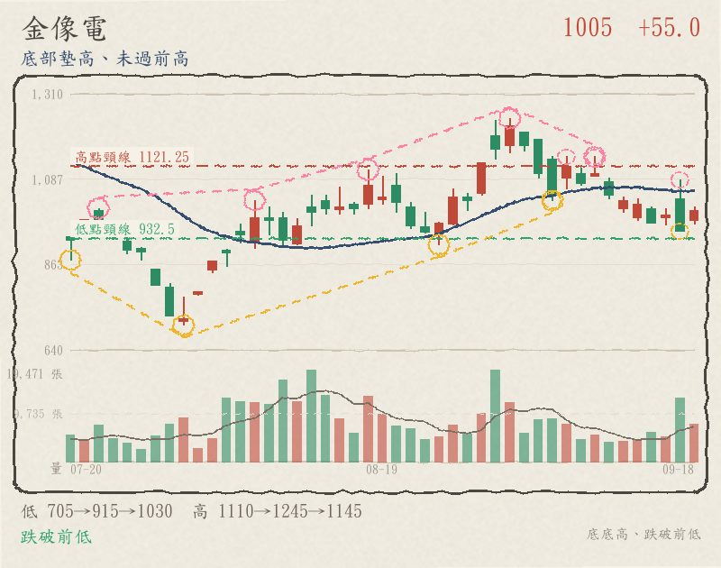
12:30 盤中 1005（+5.79%），比加權指數強 4.39 個百分點、跌破月線 1054.9，離頸線 1245 還差 19.3%，底部還在墊高（但高點沒同步創高）。
- 月線位置：現價 1005 在月線 1054.9 之下（-4.7%）；5 日線 992.8 也在月線之下（短均在下）；月線向下
- 量能：以已過交易時間推估，今天成交量約是 20 日均量的 1.38 倍（量增），比 20 日均量大不少；上漲又量增，量價配合
- 關鍵價位：已跌破前一個轉折低點；頸線 1245 還在現價上方 19.3%；前一交易日高點 1085（低於 7.4%）；今天盤中高點 1015（低於 1.0%）；今天盤中低點 969（高於 3.7%）
- 轉折結構：低點 705、915、1030 墊高（底底高），但高點 1110、1245、1145 沒有同步創高；還沒確認的轉折低點 09-04 1030、09-17 950；還沒確認的轉折高點 09-09 1145、09-17 1085（圖上虛線小圈）
台燿 6274 上櫃
1355 +35.0（+2.65%）
區間或轉弱 盤中成交值 76.57 億・全榜第 29 名（上櫃第 7 名）・相對大盤 +1.25
好條件 2/8：相對大盤強、攻擊量（量增＋上漲）
不好條件 2/8：在月線之下、月線下彎
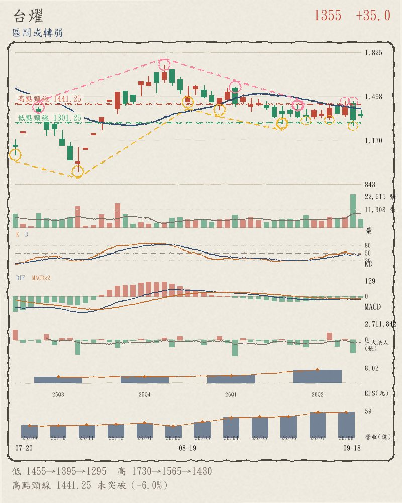
12:30 盤中 1355（+2.65%），比加權指數強 1.25 個百分點、跌破月線 1412，離頸線 1565 還差 13.4%，轉折還沒走出明顯方向。
- 月線位置：現價 1355 在月線 1412 之下（-4.0%）；5 日線 1376 也在月線之下（短均在下）；月線向下
- 量能：以已過交易時間推估，今天成交量約是 20 日均量的 1.31 倍（量增），比 20 日均量大不少；上漲又量增，量價配合
- 關鍵價位：頸線 1565 還沒突破，差 13.4%；前一交易日高點 1460（低於 7.2%）；今天盤中高點 1395（低於 2.9%）；今天盤中低點 1335（高於 1.5%）
- 轉折結構：低點 1455、1395、1295 與高點 1730、1565、1430 都沒有明顯遞增，屬於區間震盪或轉弱；還沒確認的轉折低點 09-14 1320、09-17 1275；還沒確認的轉折高點 09-16 1460、09-17 1460（圖上虛線小圈）
量增
↑ 回上方清單
力積電 6770 上市
73.1 +1.9（+2.67%）
上升趨勢（底底高＋頭頭高） 盤中成交值 74.68 億・全榜第 30 名（上市第 23 名）・相對大盤 +1.27
好條件 4/8：站上月線、底底高、頭頭高、相對大盤強
不好條件 2/8：貼近今日低點（1% 內）、月線下彎
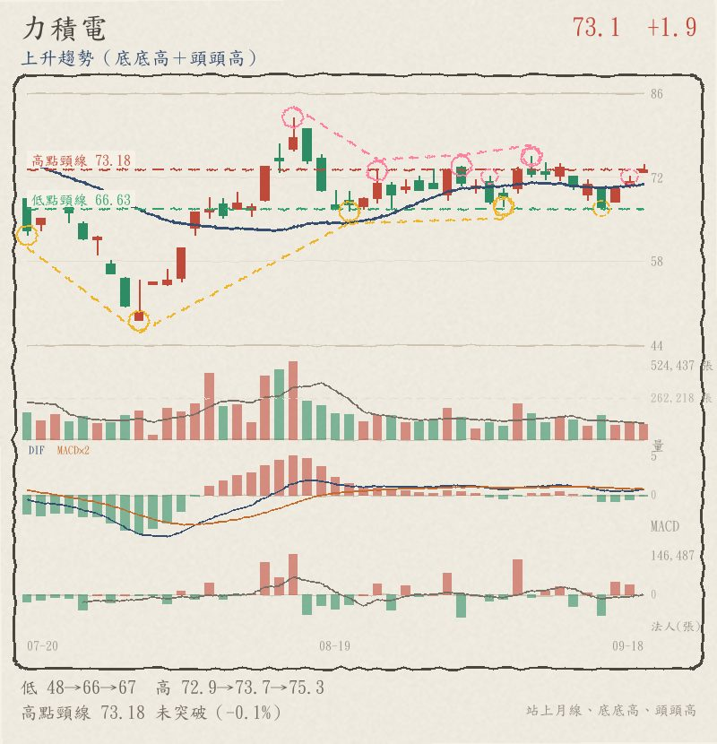
12:30 盤中 73.1（+2.67%），比加權指數強 1.27 個百分點、站上月線 70.455，離頸線 73.7 還差 0.8%，轉折結構仍是底底高＋頭頭高。
- 月線位置：現價 73.1 在月線 70.455 之上（+3.8%）；5 日線 69.88 也在月線之下（短均在下）；月線向下
- 量能：以已過交易時間推估，今天成交量約是 20 日均量的 0.96 倍（量平），跟 20 日均量差不多
- 關鍵價位：頸線 73.7 還沒突破，差 0.8%；前一交易日高點 72（高於 1.5%）；今天盤中高點 74（低於 1.2%）；今天盤中低點 72.7（高於 0.6%）
- 轉折結構：低點 48、66.2、67 一路墊高、高點 72.9、73.7、75.3 也一路墊高，是底底高＋頭頭高；還沒確認的轉折低點 09-04 67、09-15 66.7；還沒確認的轉折高點 09-08 75.3、09-17 72（圖上虛線小圈）
聯亞 3081 上櫃
2840 +120.0（+4.41%）
高點墊高、底部不穩 盤中成交值 71.09 億・全榜第 31 名（上櫃第 8 名）・相對大盤 +3.01
好條件 4/8：月線向上、頭頭高、突破頸線、相對大盤強
不好條件 1/8：在月線之下
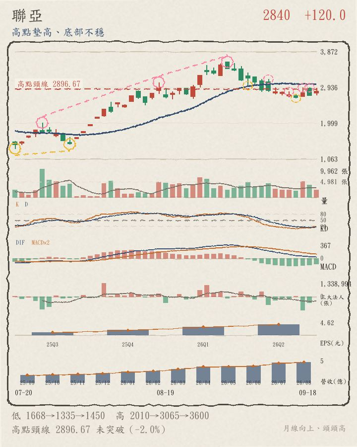
12:30 盤中 2840（+4.41%），比加權指數強 3.01 個百分點、跌破月線 3029.25，已突破頸線 2010，高點還在墊高（但底部沒同步墊高）。
- 月線位置：現價 2840 在月線 3029.25 之下（-6.2%）；5 日線 2751 也在月線之下（短均在下）；月線向上
- 量能：以已過交易時間推估，今天成交量約是 20 日均量的 0.80 倍（量平），比 20 日均量少很多；上漲但量縮，量價背離
- 關鍵價位：頸線 2010 已站上；前一交易日高點 2930（低於 3.1%）；今天盤中高點 2915（低於 2.6%）；今天盤中低點 2730（高於 4.0%）
- 轉折結構：高點 2010、3065、3600 墊高（頭頭高），但低點 1668.18、1335、1450 沒有同步墊高；還沒確認的轉折低點 09-04 2980、09-15 2650；還沒確認的轉折高點 09-16 2930、09-17 2930（圖上虛線小圈）
世芯-KY 3661 上市
3480 +185.0（+5.61%）
區間或轉弱 盤中成交值 68.31 億・全榜第 32 名（上市第 24 名）・相對大盤 +4.21
好條件 2/8：相對大盤強、攻擊量（量增＋上漲）
不好條件 3/8：跌破前低、在月線之下、月線下彎
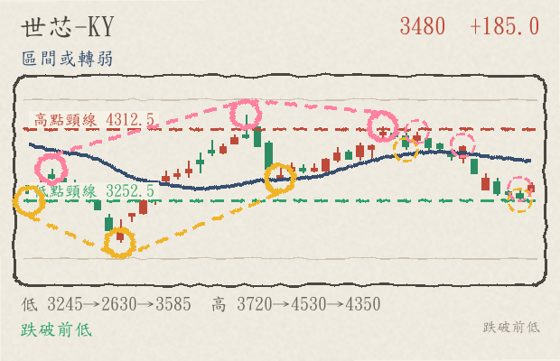
12:30 盤中 3480（+5.61%），比加權指數強 4.21 個百分點、跌破月線 3864，離頸線 4530 還差 23.2%，轉折還沒走出明顯方向。
- 月線位置：現價 3480 在月線 3864 之下（-9.9%）；5 日線 3447 也在月線之下（短均在下）；月線向下
- 量能：以已過交易時間推估，今天成交量約是 20 日均量的 1.25 倍（量增），比 20 日均量大不少；上漲又量增，量價配合
- 關鍵價位：已跌破前一個轉折低點；頸線 4530 還在現價上方 23.2%；前一交易日高點 3430（高於 1.5%）；今天盤中高點 3520（低於 1.1%）；今天盤中低點 3380（高於 3.0%）
- 轉折結構：低點 3245、2630、3585 與高點 3720、4530、4350 都沒有明顯遞增，屬於區間震盪或轉弱；還沒確認的轉折低點 09-03 4010、09-17 3260；還沒確認的轉折高點 09-10 4075、09-17 3430（圖上虛線小圈）
欣銓 3264 上櫃
267 +22.5（+9.20%）
上升趨勢（底底高＋頭頭高） 盤中成交值 65.13 億・全榜第 33 名（上櫃第 9 名）・相對大盤 +7.80
好條件 8/8：站上月線、月線向上、底底高、頭頭高、突破頸線、相對大盤強、攻擊量（量增＋上漲）、守住今日高檔（距今日高點 1% 內）
不好條件 0/8：無
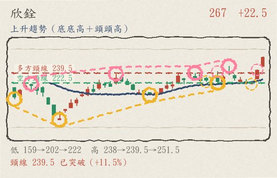
12:30 盤中 267（+9.20%），比加權指數強 7.80 個百分點、站上月線 225.85，已突破頸線 239.5，轉折結構仍是底底高＋頭頭高。
- 月線位置：現價 267 在月線 225.85 之上（+18.2%）；5 日線 229.3 也在月線之上（短均在上）；月線向上
- 量能：以已過交易時間推估，今天成交量約是 20 日均量的 5.09 倍（爆量），比 20 日均量大不少；上漲又量增，量價配合
- 關鍵價位：頸線 239.5 已站上；前一交易日高點 245（高於 9.0%）；今天盤中高點 268（低於 0.4%）；今天盤中低點 250.5（高於 6.6%）
- 轉折結構：低點 159、202、222.5 一路墊高、高點 238、239.5、251.5 也一路墊高，是底底高＋頭頭高；還沒確認的轉折低點 09-08 222.5、09-16 220；還沒確認的轉折高點 09-10 251.5、09-17 245（圖上虛線小圈）
智邦 2345 上市
1830 +30.0（+1.67%）
區間或轉弱 盤中成交值 64.67 億・全榜第 34 名（上市第 25 名）・相對大盤 +0.27
好條件 2/8：相對大盤強、攻擊量（量增＋上漲）
不好條件 3/8：跌破前低、在月線之下、月線下彎
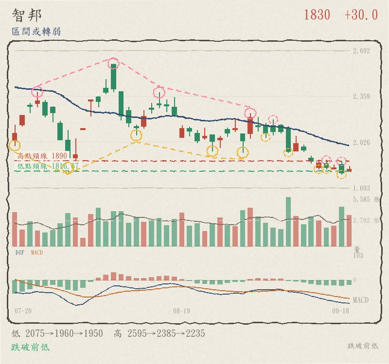
12:30 盤中 1830（+1.67%），比加權指數強 0.27 個百分點、跌破月線 2012.5，離頸線 2235 還差 18.1%，轉折還沒走出明顯方向。
- 月線位置：現價 1830 在月線 2012.5 之下（-9.1%）；5 日線 1848 也在月線之下（短均在下）；月線向下
- 量能：以已過交易時間推估，今天成交量約是 20 日均量的 1.58 倍（爆量），比 20 日均量大不少；上漲又量增，量價配合
- 關鍵價位：已跌破前一個轉折低點；頸線 2235 還在現價上方 18.1%；前一交易日高點 1885（低於 2.9%）；今天盤中高點 1850（低於 1.1%）；今天盤中低點 1810（高於 1.1%）
- 轉折結構：低點 2075、1960、1950 與高點 2595、2385、2235 都沒有明顯遞增，屬於區間震盪或轉弱；還沒確認的轉折低點 09-15 1830、09-17 1790；還沒確認的轉折高點 09-15 1895、09-17 1885（圖上虛線小圈）
禾伸堂 3026 上市
788 +28.0（+3.68%）
上升趨勢（底底高＋頭頭高） 盤中成交值 62.71 億・全榜第 35 名（上市第 26 名）・相對大盤 +2.28
好條件 5/8：站上月線、月線向上、底底高、頭頭高、相對大盤強
不好條件 0/8：無
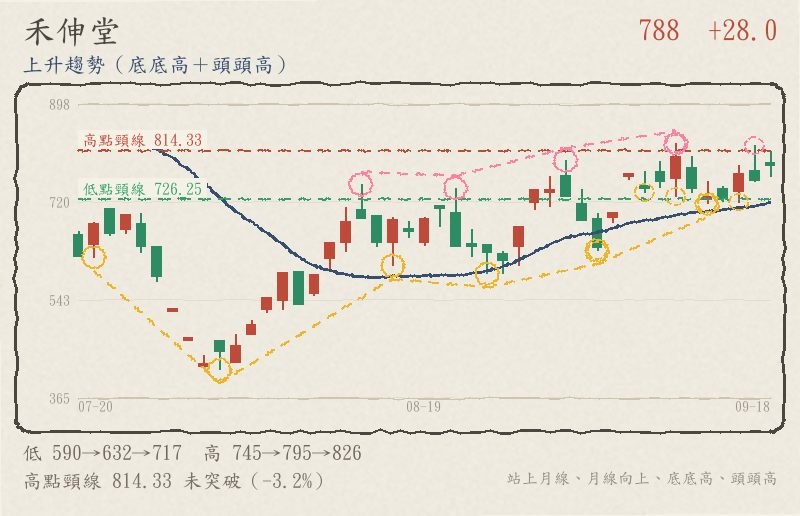
12:30 盤中 788（+3.68%），比加權指數強 2.28 個百分點、站上月線 712.55，離頸線 826 還差 4.6%，轉折結構仍是底底高＋頭頭高。
- 月線位置：現價 788 在月線 712.55 之上（+10.6%）；5 日線 746.6 也在月線之上（短均在上）；月線向上
- 量能：以已過交易時間推估，今天成交量約是 20 日均量的 1.07 倍（量平），比 20 日均量大一些
- 關鍵價位：頸線 826 還沒突破，差 4.6%；前一交易日高點 822（低於 4.1%）；今天盤中高點 811（低於 2.8%）；今天盤中低點 766（高於 2.9%）
- 轉折結構：低點 590、632、717 一路墊高、高點 745、795、826 也一路墊高，是底底高＋頭頭高；還沒確認的轉折低點 09-14 717、09-16 720；還沒確認的轉折高點 09-10 826、09-17 822（圖上虛線小圈）
玉晶光 3406 上市
973 +8.0（+0.83%）
上升趨勢（底底高＋頭頭高） 盤中成交值 60.38 億・全榜第 36 名（上市第 27 名）・相對大盤 -0.57
好條件 5/8：站上月線、月線向上、底底高、頭頭高、攻擊量（量增＋上漲）
不好條件 1/8：相對大盤弱
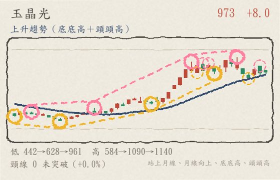
12:30 盤中 973（+0.83%），比加權指數弱 0.57 個百分點、站上月線 934.55，離頸線 1090 還差 10.7%，轉折結構仍是底底高＋頭頭高。
- 月線位置：現價 973 在月線 934.55 之上（+4.1%）；5 日線 979.8 也在月線之上（短均在上）；月線向上
- 量能：以已過交易時間推估，今天成交量約是 20 日均量的 1.31 倍（量增），比 20 日均量大不少；上漲又量增，量價配合
- 關鍵價位：頸線 1090 還沒突破，差 10.7%；前一交易日高點 1045（低於 6.9%）；今天盤中高點 999（低於 2.6%）；今天盤中低點 955（高於 1.9%）
- 轉折結構：低點 442、628、961 一路墊高、高點 584、1090、1140 也一路墊高，是底底高＋頭頭高；還沒確認的轉折低點 09-07 961、09-15 906；還沒確認的轉折高點 09-11 1140、09-17 1045（圖上虛線小圈）
合晶 6182 上櫃
115.5 +5.0（+4.52%）
區間或轉弱 盤中成交值 59.86 億・全榜第 37 名（上櫃第 10 名）・相對大盤 +3.12
好條件 4/8：站上月線、相對大盤強、攻擊量（量增＋上漲）、守住今日高檔（距今日高點 1% 內）
不好條件 1/8：月線下彎
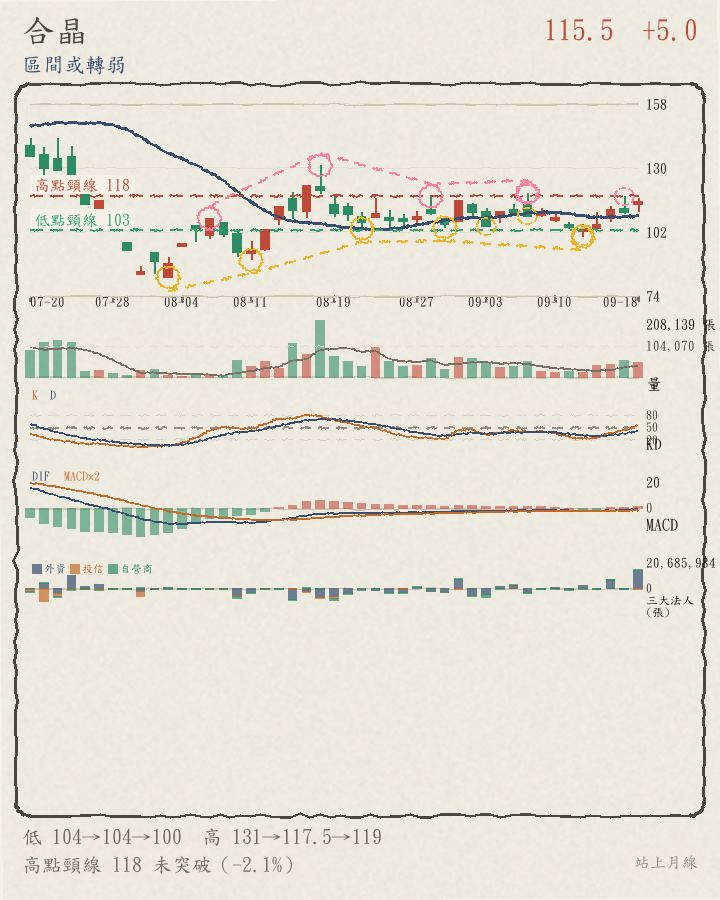
12:30 盤中 115.5（+4.52%），比加權指數強 3.12 個百分點、站上月線 108.65，離頸線 119 還差 2.9%，轉折還沒走出明顯方向。
- 月線位置：現價 115.5 在月線 108.65 之上（+6.3%）；5 日線 107.2 也在月線之下（短均在下）；月線向下
- 量能：以已過交易時間推估，今天成交量約是 20 日均量的 1.44 倍（量增），比 20 日均量大不少；上漲又量增，量價配合
- 關鍵價位：頸線 119 還沒突破，差 2.9%；前一交易日高點 117.5（低於 1.7%）；今天盤中高點 116.5（低於 0.9%）；今天盤中低點 111（高於 4.1%）
- 轉折結構：低點 103.5、104、100 與高點 131、117.5、119 都沒有明顯遞增，屬於區間震盪或轉弱；還沒確認的轉折低點 09-08 109、09-14 100；還沒確認的轉折高點 09-08 119、09-17 117.5（圖上虛線小圈）
緯穎 6669 上市
2160 +25.0（+1.17%）
上升趨勢（底底高＋頭頭高） 盤中成交值 59.16 億・全榜第 38 名（上市第 28 名）・相對大盤 -0.23
好條件 3/8：月線向上、底底高、頭頭高
不好條件 2/8：相對大盤弱、在月線之下
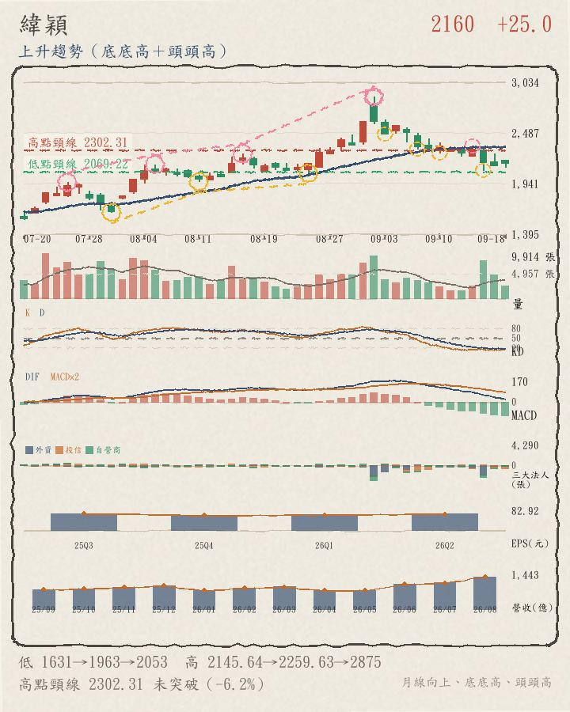
12:30 盤中 2160（+1.17%），比加權指數弱 0.23 個百分點、跌破月線 2334.01，離頸線 2259.63 還差 4.4%，轉折結構仍是底底高＋頭頭高。
- 月線位置：現價 2160 在月線 2334.01 之下（-7.5%）；5 日線 2239 也在月線之下（短均在下）；月線向上
- 量能：以已過交易時間推估，今天成交量約是 20 日均量的 0.85 倍（量平），比 20 日均量少一些；上漲但量縮，量價背離
- 關鍵價位：頸線 2259.63 還沒突破，差 4.4%；前一交易日高點 2260（低於 4.4%）；今天盤中高點 2195（低於 1.6%）；今天盤中低點 2115（高於 2.1%）
- 轉折結構：低點 1631.02、1962.92、2053.44 一路墊高、高點 2145.64、2259.63、2875 也一路墊高，是底底高＋頭頭高；還沒確認的轉折低點 09-10 2270、09-16 2085；還沒確認的轉折高點 09-02 2875、09-15 2345（圖上虛線小圈）
宏致 3605 上市
154 +14.0（+10.00%）
底部墊高、未過前高 盤中成交值 57.94 億・全榜第 39 名（上市第 29 名）・相對大盤 +8.60
好條件 6/8：站上月線、月線向上、底底高、突破頸線、相對大盤強、攻擊量（量增＋上漲）
不好條件 0/8：無
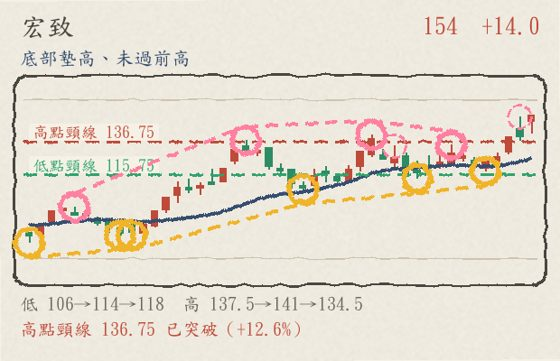
12:30 盤中 154（+10.00%），比加權指數強 8.60 個百分點、站上月線 124.275，已突破頸線 134.5，底部還在墊高（但高點沒同步創高）。
- 月線位置：現價 154 在月線 124.275 之上（+23.9%）；5 日線 131.3 也在月線之上（短均在上）；月線向上
- 量能：以已過交易時間推估，今天成交量約是 20 日均量的 3.47 倍（爆量），比 20 日均量大不少；上漲又量增，量價配合
- 關鍵價位：頸線 134.5 已站上；前一交易日高點 152.5（高於 1.0%）；今天盤中高點 154（高於 0.0%）；今天盤中低點 142（高於 8.5%）
- 轉折結構：低點 106.5、113.5、118 墊高（底底高），但高點 137.5、141、134.5 沒有同步創高；還沒確認的轉折低點 09-04 113.5、09-14 118；還沒確認的轉折高點 09-09 134.5、09-17 152.5（圖上虛線小圈）
華星光 4979 上櫃
611 +55.0（+9.89%）
底部墊高、未過前高 盤中成交值 57.09 億・全榜第 40 名（上櫃第 11 名）・相對大盤 +8.49
好條件 4/8：站上月線、底底高、相對大盤強、攻擊量（量增＋上漲）
不好條件 1/8：月線下彎
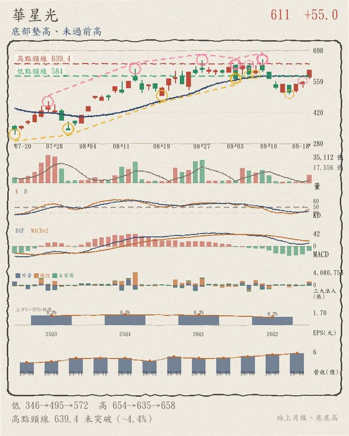
12:30 盤中 611（+9.89%），比加權指數強 8.49 個百分點、站上月線 582.5，離頸線 654 還差 6.6%，底部還在墊高（但高點沒同步創高）。
- 月線位置：現價 611 在月線 582.5 之上（+4.9%）；5 日線 538 也在月線之下（短均在下）；月線向下
- 量能：以已過交易時間推估，今天成交量約是 20 日均量的 1.24 倍（量增），比 20 日均量大不少；上漲又量增，量價配合
- 關鍵價位：頸線 654 還沒突破，差 6.6%；前一交易日高點 561（高於 8.9%）；今天盤中高點 611（高於 0.0%）；今天盤中低點 571（高於 7.0%）
- 轉折結構：低點 346.5、495、572 墊高（底底高），但高點 654、635、658 沒有同步創高；還沒確認的轉折低點 09-08 590、09-15 501；還沒確認的轉折高點 09-09 658、09-17 561（圖上虛線小圈）
友達 2409 上市
29.6 -0.4（-1.33%）
區間或轉弱 盤中成交值 55.38 億・全榜第 41 名（上市第 30 名）・相對大盤 -2.73
好條件 2/8：站上月線、月線向上
不好條件 2/8：今日下跌、相對大盤弱
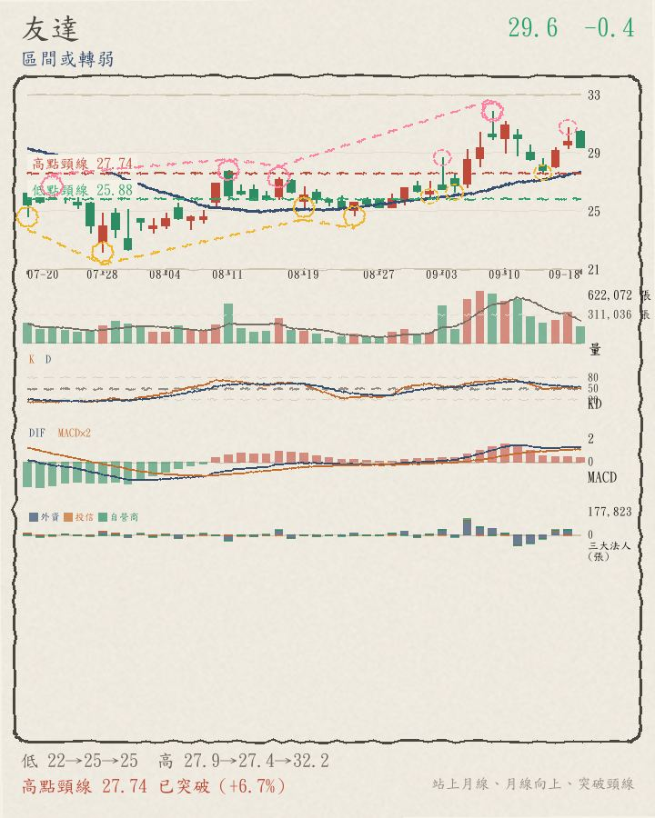
12:30 盤中 29.6（-1.33%），比加權指數弱 2.73 個百分點、站上月線 27.605，離頸線 32.2 還差 8.1%，轉折還沒走出明顯方向。
- 月線位置：現價 29.6 在月線 27.605 之上（+7.2%）；5 日線 29.24 也在月線之上（短均在上）；月線向上
- 量能：以已過交易時間推估，今天成交量約是 20 日均量的 0.94 倍（量平），比 20 日均量少一些
- 關鍵價位：頸線 32.2 還沒突破，差 8.1%；前一交易日高點 31.05（低於 4.7%）；今天盤中高點 30.8（低於 3.9%）；今天盤中低點 29.6（高於 0.0%）
- 轉折結構：低點 22、25.25、24.6 與高點 27.9、27.4、32.2 都沒有明顯遞增，屬於區間震盪或轉弱；還沒確認的轉折低點 09-04 26.35、09-15 27.75；還沒確認的轉折高點 09-09 32.2、09-17 31.05（圖上虛線小圈）
鴻海 2317 上市
251 +0.5（+0.20%）
區間或轉弱 盤中成交值 54.28 億・全榜第 42 名（上市第 31 名）・相對大盤 -1.20
好條件 2/8：站上月線、守住今日高檔（距今日高點 1% 內）
不好條件 3/8：相對大盤弱、貼近今日低點（1% 內）、月線下彎
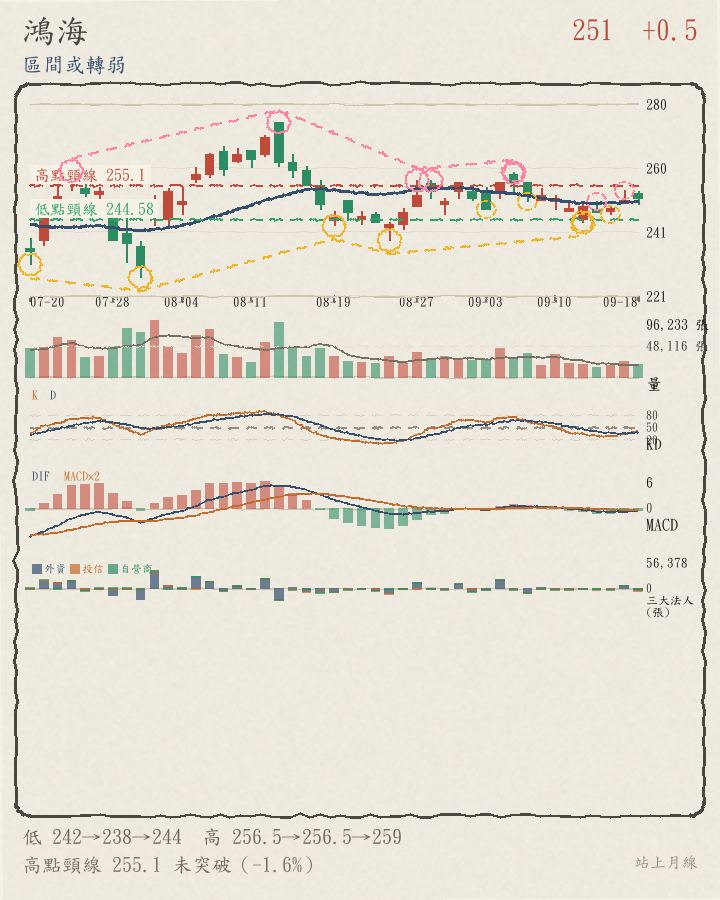
12:30 盤中 251（+0.20%），比加權指數弱 1.20 個百分點、站上月線 249.8，離頸線 259 還差 3.1%，轉折還沒走出明顯方向。
- 月線位置：現價 251 在月線 249.8 之上（+0.5%）；5 日線 248.3 也在月線之下（短均在下）；月線向下
- 量能：以已過交易時間推估，今天成交量約是 20 日均量的 0.96 倍（量平），跟 20 日均量差不多
- 關鍵價位：頸線 259 還沒突破，差 3.1%；前一交易日高點 253.5（低於 1.0%）；今天盤中高點 253（低於 0.8%）；今天盤中低點 249（高於 0.8%）
- 轉折結構：低點 242.5、238、243.5 與高點 256.5、256.5、259 都沒有明顯遞增，屬於區間震盪或轉弱；還沒確認的轉折低點 09-14 243.5、09-16 246；還沒確認的轉折高點 09-15 250、09-17 253.5（圖上虛線小圈）
中砂 1560 上市
896 +81.0（+9.94%）
區間或轉弱 盤中成交值 52.47 億・全榜第 43 名（上市第 32 名）・相對大盤 +8.54
好條件 5/8：站上月線、月線向上、突破頸線、相對大盤強、攻擊量（量增＋上漲）
不好條件 0/8：無
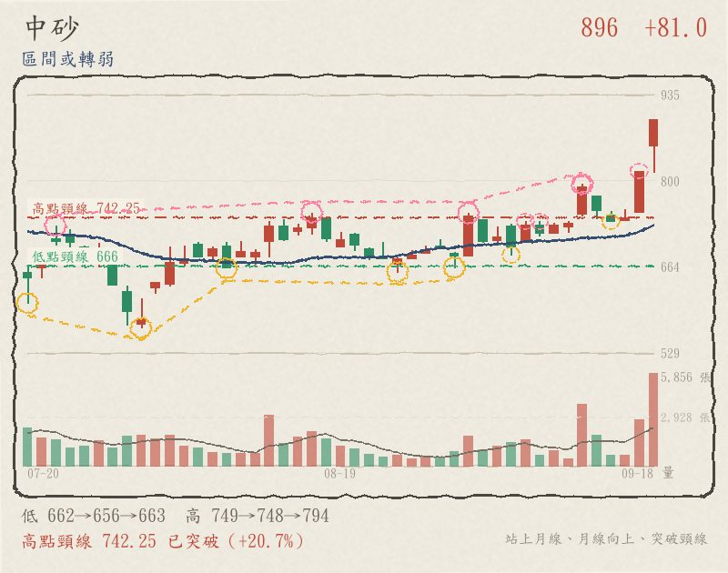
12:30 盤中 896（+9.94%），比加權指數強 8.54 個百分點、站上月線 719.2，已突破頸線 794，轉折還沒走出明顯方向。
- 月線位置：現價 896 在月線 719.2 之上（+24.6%）；5 日線 766.8 也在月線之上（短均在上）；月線向上
- 量能：以已過交易時間推估，今天成交量約是 20 日均量的 6.82 倍（爆量），比 20 日均量大不少；上漲又量增，量價配合
- 關鍵價位：頸線 794 已站上；前一交易日高點 815（高於 9.9%）；今天盤中高點 896（高於 0.0%）；今天盤中低點 813（高於 10.2%）
- 轉折結構：低點 662、656、663 與高點 749、748、794 都沒有明顯遞增，屬於區間震盪或轉弱；還沒確認的轉折低點 09-04 683、09-15 735；還沒確認的轉折高點 09-11 794、09-17 815（圖上虛線小圈）
強茂 2481 上市
167.5 +4.5（+2.76%）
高點墊高、底部不穩 盤中成交值 51.71 億・全榜第 44 名（上市第 33 名）・相對大盤 +1.36
好條件 4/8：站上月線、月線向上、頭頭高、相對大盤強
不好條件 0/8：無
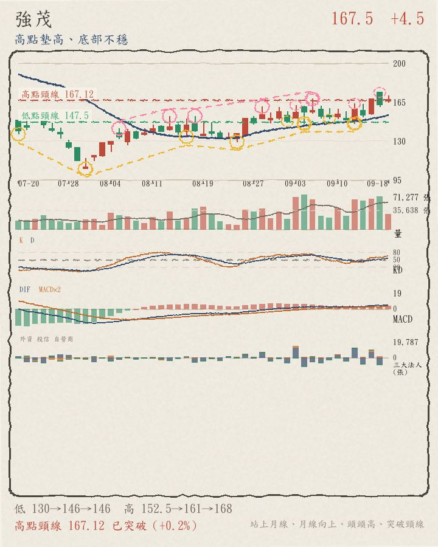
12:30 盤中 167.5（+2.76%），比加權指數強 1.36 個百分點、站上月線 151.7，離頸線 168 還差 0.3%，高點還在墊高（但底部沒同步墊高）。
- 月線位置：現價 167.5 在月線 151.7 之上（+10.4%）；5 日線 158.8 也在月線之上（短均在上）；月線向上
- 量能：以已過交易時間推估，今天成交量約是 20 日均量的 1.04 倍（量平），跟 20 日均量差不多
- 關鍵價位：頸線 168 還沒突破，差 0.3%；前一交易日高點 174（低於 3.7%）；今天盤中高點 171（低於 2.0%）；今天盤中低點 165（高於 1.5%）
- 轉折結構：高點 152.5、161、168 墊高（頭頭高），但低點 129.5、146、146 沒有同步墊高；還沒確認的轉折低點 09-09 150、09-14 146；還沒確認的轉折高點 09-14 164、09-17 174（圖上虛線小圈）
光鼎 6226 上市
45.7 +1.9（+4.22%）
底部墊高、未過前高 盤中成交值 51.28 億・全榜第 45 名（上市第 34 名）・相對大盤 +2.82
好條件 6/8：站上月線、月線向上、底底高、突破頸線、相對大盤強、攻擊量（量增＋上漲）
不好條件 0/8：無
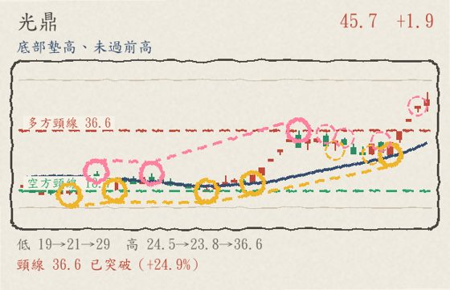
12:30 盤中 45.7（+4.22%），比加權指數強 2.82 個百分點、站上月線 31.788，已突破頸線 36.6，底部還在墊高（但高點沒同步創高）。
- 月線位置：現價 45.7 在月線 31.788 之上（+43.8%）；5 日線 36.61 也在月線之上（短均在上）；月線向上
- 量能：以已過交易時間推估，今天成交量約是 20 日均量的 6.10 倍（爆量），比 20 日均量大不少；上漲又量增，量價配合
- 關鍵價位：頸線 36.6 已站上；前一交易日高點 43.85（高於 4.2%）；今天盤中高點 48（低於 4.8%）；今天盤中低點 42.3（高於 8.0%）
- 轉折結構：低點 18.7、21、29.4 墊高（底底高），但高點 24.5、23.8、36.6 沒有同步創高；還沒確認的轉折低點 09-10 29.45、09-14 29.4；還沒確認的轉折高點 09-11 33.35、09-17 43.85（圖上虛線小圈）
致茂 2360 上市
2290 +205.0（+9.83%）
上升趨勢（底底高＋頭頭高） 盤中成交值 50.68 億・全榜第 46 名（上市第 35 名）・相對大盤 +8.43
好條件 5/8：站上月線、底底高、頭頭高、相對大盤強、攻擊量（量增＋上漲）
不好條件 1/8：月線下彎
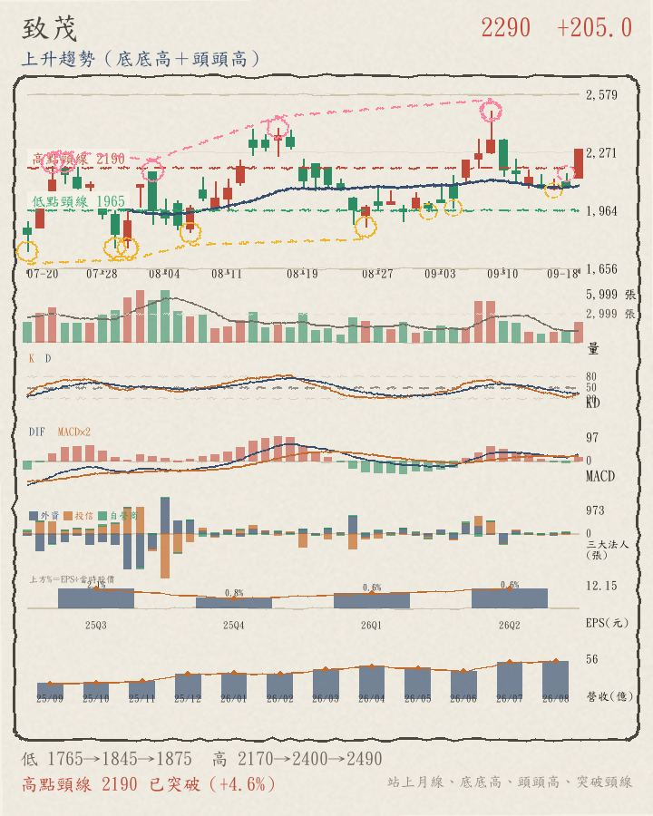
12:30 盤中 2290（+9.83%），比加權指數強 8.43 個百分點、站上月線 2084.5，離頸線 2400 還差 4.6%，轉折結構仍是底底高＋頭頭高。
- 月線位置：現價 2290 在月線 2084.5 之上（+9.9%）；5 日線 2111 也在月線之上（短均在上）；月線向下
- 量能：以已過交易時間推估，今天成交量約是 20 日均量的 1.47 倍（量增），比 20 日均量大不少；上漲又量增，量價配合
- 關鍵價位：頸線 2400 還沒突破，差 4.6%；前一交易日高點 2160（高於 6.0%）；今天盤中高點 2290（高於 0.0%）；今天盤中低點 2135（高於 7.3%）
- 轉折結構：低點 1765、1845、1875 一路墊高、高點 2170、2400、2490 也一路墊高，是底底高＋頭頭高；還沒確認的轉折低點 09-04 1975、09-16 2070；還沒確認的轉折高點 09-09 2490、09-17 2160（圖上虛線小圈）
精材 3374 上櫃
433.5 +4.5（+1.05%）
高點墊高、底部不穩 盤中成交值 44.59 億・全榜第 47 名（上櫃第 12 名）・相對大盤 -0.35
好條件 4/8：站上月線、月線向上、頭頭高、突破頸線
不好條件 1/8：相對大盤弱
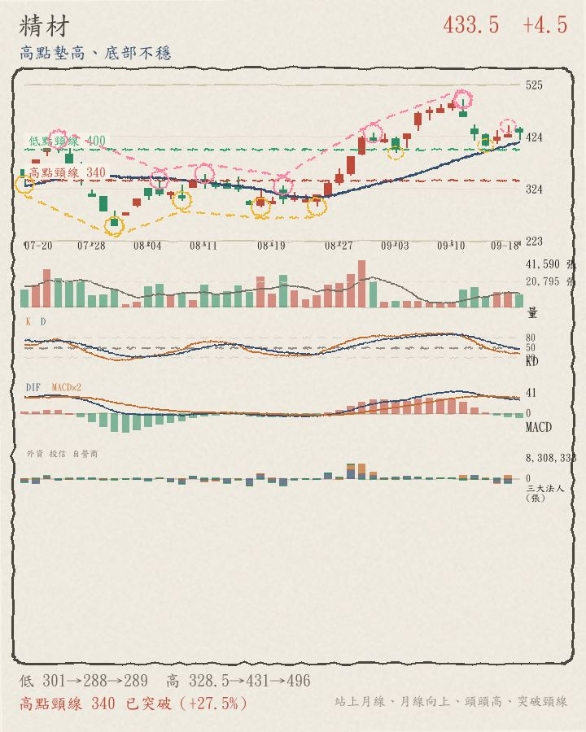
12:30 盤中 433.5（+1.05%），比加權指數弱 0.35 個百分點、站上月線 407.475，已突破頸線 328.5，高點還在墊高（但底部沒同步墊高）。
- 月線位置：現價 433.5 在月線 407.475 之上（+6.4%）；5 日線 430.9 也在月線之上（短均在上）；月線向上
- 量能：以已過交易時間推估，今天成交量約是 20 日均量的 0.98 倍（量平），跟 20 日均量差不多
- 關鍵價位：頸線 328.5 已站上；前一交易日高點 445（低於 2.6%）；今天盤中高點 442.5（低於 2.0%）；今天盤中低點 418.5（高於 3.6%）
- 轉折結構：高點 328.5、431、496 墊高（頭頭高），但低點 301、288、289 沒有同步墊高；還沒確認的轉折低點 09-03 393、09-15 407；還沒確認的轉折高點 09-11 496、09-17 445（圖上虛線小圈）
世界 5347 上櫃
168 +2.5（+1.51%）
高點墊高、底部不穩 盤中成交值 37.4 億・全榜第 48 名（上櫃第 13 名）・相對大盤 +0.11
好條件 6/8：站上月線、月線向上、頭頭高、突破頸線、相對大盤強、攻擊量（量增＋上漲）
不好條件 0/8：無
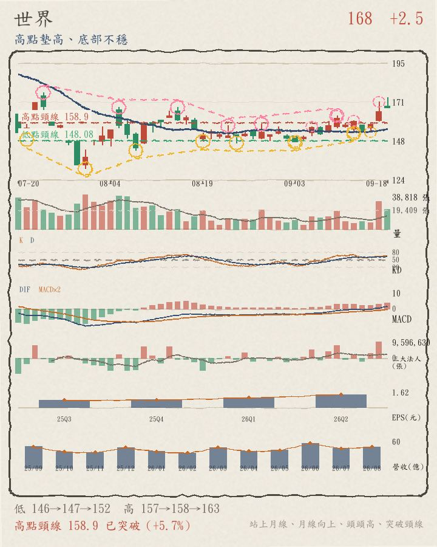
12:30 盤中 168（+1.51%），比加權指數強 0.11 個百分點、站上月線 154.025，已突破頸線 163，高點還在墊高（但底部沒同步墊高）。
- 月線位置：現價 168 在月線 154.025 之上（+9.1%）；5 日線 158.7 也在月線之上（短均在上）；月線向上
- 量能：以已過交易時間推估，今天成交量約是 20 日均量的 2.65 倍（爆量），比 20 日均量大不少；上漲又量增，量價配合
- 關鍵價位：頸線 163 已站上；前一交易日高點 171.5（低於 2.0%）；今天盤中高點 174（低於 3.4%）；今天盤中低點 168（高於 0.0%）
- 轉折結構：高點 157、158、163 墊高（頭頭高），但低點 146.5、147、152.5 沒有同步墊高；還沒確認的轉折低點 09-14 152.5、09-16 153；還沒確認的轉折高點 09-14 160、09-17 171.5（圖上虛線小圈）
世紀* 5314 上櫃
30.5 +2.8（+9.91%）
高點墊高、底部不穩 盤中成交值 36.5 億・全榜第 49 名（上櫃第 14 名）・相對大盤 +8.51
好條件 4/8：月線向上、頭頭高、相對大盤強、攻擊量（量增＋上漲）
不好條件 2/8：跌破前低、在月線之下
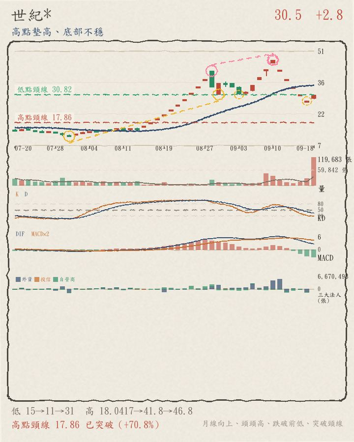
12:30 盤中 30.5（+9.91%），比加權指數強 8.51 個百分點、跌破月線 34.87，離頸線 41.8 還差 27.0%，高點還在墊高（但底部沒同步墊高）。
- 月線位置：現價 30.5 在月線 34.87 之下（-12.5%）；5 日線 34.57 也在月線之下（短均在下）；月線向上
- 量能：以已過交易時間推估，今天成交量約是 20 日均量的 13.69 倍（爆量），比 20 日均量大不少；上漲又量增，量價配合
- 關鍵價位：已跌破前一個轉折低點；頸線 41.8 還在現價上方 27.0%；前一交易日高點 27.75（高於 9.9%）；今天盤中高點 30.5（高於 0.0%）；今天盤中低點 28.8（高於 5.9%）
- 轉折結構：高點 18.0417、41.8、46.8 墊高（頭頭高），但低點 15.4197、11.3543、30.8 沒有同步墊高；還沒確認的轉折低點 09-03 30.85、09-17 27.75；還沒確認的轉折高點 09-10 46.8（圖上虛線小圈）
信昌電 6173 上櫃
304 +0.5（+0.16%）
上升趨勢（底底高＋頭頭高） 盤中成交值 35.76 億・全榜第 50 名（上櫃第 15 名）・相對大盤 -1.24
好條件 5/8：站上月線、月線向上、底底高、頭頭高、突破頸線
不好條件 1/8：相對大盤弱
12:30 盤中 304（+0.16%），比加權指數弱 1.24 個百分點、站上月線 258.125，已突破頸線 270.5，轉折結構仍是底底高＋頭頭高。
- 月線位置：現價 304 在月線 258.125 之上（+17.8%）；5 日線 299.3 也在月線之上（短均在上）；月線向上
- 量能：以已過交易時間推估，今天成交量約是 20 日均量的 0.75 倍（量平），比 20 日均量少很多；上漲但量縮，量價背離
- 關鍵價位：頸線 270.5 已站上；前一交易日高點 325（低於 6.5%）；今天盤中高點 312.5（低於 2.7%）；今天盤中低點 300（高於 1.3%）
- 轉折結構：低點 189.5、190.5、265.5 一路墊高、高點 178、230、270.5 也一路墊高，是底底高＋頭頭高；還沒確認的轉折低點 09-14 272.5、09-17 295；還沒確認的轉折高點 09-11 321、09-17 325（圖上虛線小圈）